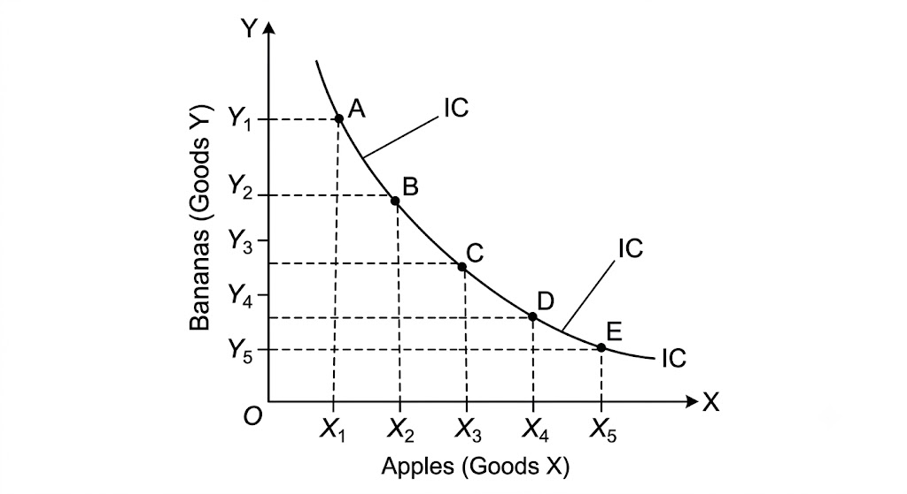

MJC-5 Economics Notes
व्यष्टि अर्थशास्त्र (Micro-Economics: MJC-5)
इकाई-1: उपयोगिता विश्लेषण (Utility Analysis) — विषय प्रवेश (Introduction)
प्रिय विद्यार्थी,
अर्थशास्त्र की इस खूबसूरत दुनिया में आपका स्वागत है! जब भी आप बाजार जाते हैं—चाहे समोसा खाने, नया मोबाइल खरीदने या कपड़े चुनने—आपके दिमाग में एक सवाल अनजाने में ही चलता है: "क्या इस चीज को खरीदने से मुझे मेरी दी गई कीमत के बदले पूरी संतुष्टि (Satisfaction) मिलेगी?"
अर्थशास्त्र में इसी "संतुष्टि" की क्षमता को उपयोगिता (Utility) कहा जाता है।
इस इकाई-1 में हम यही समझने वाले हैं कि एक उपभोक्ता (Consumer) अपने सीमित पैसों (Budget) में बाजार से सामान खरीदकर अपनी संतुष्टि को अधिकतम (Maximize) कैसे करता है।
इस इकाई का रोडमैप (हम आगे क्या-क्या पढ़ने वाले हैं?):
- क्रमवाचक उपयोगिता (Ordinal Utility): पहले के अर्थशास्त्रियों का मानना था कि संतुष्टि को 1, 2, 3 जैसे अंकों में मापा जा सकता है। लेकिन आधुनिक अर्थशास्त्रियों (जैसे हिक्स और एलन) ने कहा कि संतुष्टि को नापा नहीं, बल्कि क्रम (Rank) दिया जा सकता है (जैसे: "मुझे चाय से ज्यादा कॉफी पसंद है")। हम यहाँ तटस्थता वक्र (Indifference Curve) और बजट रेखा (Budget Line) का जादू देखेंगे।
- प्रभाव और समीकरण (Effects & Equations): जब आपकी आय बदलती है, या किसी सामान का दाम घटता-बढ़ता है, तो आपकी खरीदारी पर क्या असर पड़ता है? इसे हम आय, प्रतिस्थापन और कीमत प्रभाव के जरिए समझेंगे। साथ ही स्लट्सकी समीकरण और हिक्सियन प्रभाव का गणितीय व रेखाचित्र विश्लेषण करेंगे।
- प्रकट अधिमान सिद्धांत (Revealed Preference Theory): प्रो. सैमुअलसन का यह क्रांतिकारी विचार हमें सिखाता है कि उपभोक्ता का व्यवहार और उसकी पसंद उसके वास्तविक चुनाव (Actual Choice) से कैसे प्रकट होती है।
- मांग सिद्धांत का संशोधन (Revision of Demand Theory): कमजोर व मजबूत क्रमबद्धता (Weak & Strong Ordering) और मांग के सिद्धांत में हुए सबसे आधुनिक विकास को समझेंगे।
विषय 1.1: क्रमवाचक उपयोगिता दृष्टिकोण (Ordinal Utility Approach)
1.1.1 अवधारणा, मान्यताएं और उपकरण (Concept, Assumptions & Tools)
1. अवधारणा (Concept of Ordinal Utility):
पुराने अर्थशास्त्रियों (जैसे अल्फ्रेड मार्शल) ने गणनावचक उपयोगिता (Cardinal Utility) का सिद्धांत दिया था। उनका कहना था कि यदि आप एक सेब खाते हैं, तो आपको '10 युटिल (Utils)' की संतुष्टि मिलती है।
लेकिन विचार कीजिए—क्या आप सचमुच अपनी संतुष्टि को अंकों में माप सकते हैं? क्या आप कह सकते हैं कि "मुझे आम खाकर 15 यूनिट और केला खाकर 10 यूनिट खुशी मिली"? नहीं!
इसी कमी को दूर करने के लिए प्रो. जे.आर. हिक्स (J.R. Hicks) और आर.जे.डी. एलन (R.G.D. Allen) ने 1934 में क्रमवाचक उपयोगिता दृष्टिकोण (Ordinal Utility Approach) प्रस्तुत किया।
💡 सरल शब्दों में:
क्रमवाचक उपयोगिता का अर्थ है कि उपभोक्ता विभिन्न वस्तुओं या उनके संयोजनों (Combinations) को अपनी पसंद के अनुसार क्रम (Preference/Rank) दे सकता है—जैसे पहला (1st), दूसरा (2nd), तीसरा (3rd)। यहाँ संख्या (Numbers) मायने नहीं रखती, बल्कि तुलना (Comparison) मायने रखती है।
व्यावहारिक उदाहरण:
मान लीजिए आपके पास दो विकल्प हैं:
- विकल्प A: 2 समोसे + 1 कोल्ड ड्रिंक
- विकल्प B: 1 समोसा + 2 कोल्ड ड्रिंक
आप यह नहीं कहेंगे कि A से 50 पॉइंट और B से 40 पॉइंट मिले। आप सिर्फ यह कहेंगे कि "मुझे विकल्प A, विकल्प B की तुलना में अधिक पसंद है" या "मुझे दोनों से बराबर संतुष्टि मिल रही है।"
2. क्रमवाचक उपयोगिता सिद्धांत की मुख्य मान्यताएं (Basic Assumptions):
किसी भी वैज्ञानिक सिद्धांत की तरह, यह सिद्धांत भी कुछ मान्यताओं पर आधारित है। यदि ये मान्यताएं लागू होती हैं, तभी उपभोक्ता का व्यवहार तार्किक (Rational) माना जाता है:
- विवेकशील उपभोक्ता (Rational Consumer):
उपभोक्ता समझदार और बुद्धिमान है। उसका एकमात्र उद्देश्य अपनी दी गई आय से अपनी कुल संतुष्टि को अधिकतम (Maximize Satisfaction) करना है।
- क्रमवाचक उपयोगिता (Ordinal Utility):
उपभोक्ता अपनी संतुष्टि को अंकों में नहीं माप सकता, केवल विभिन्न संयोजनों की तुलना करके उन्हें प्राथमिकता या क्रम (Rank) दे सकता है।
- सकल / सकर्मकता की मान्यता (Transitivity & Consistency):
- सकर्मकता (Transitivity): यदि उपभोक्ता संयोजन A को B से ज्यादा पसंद करता है (), और B को C से ज्यादा पसंद करता है (), तो वह स्वचालित रूप से A को C से ज्यादा पसंद करेगा ()।
- संगति (Consistency): यदि एक समय में है, तो दूसरे समय में वह नहीं चुनेगा (जब तक कि उसकी आय या स्थितियां न बदलें)।
- गैर-तृप्ति या अधिकता की पसंद (Non-Satiety / More is preferred to less):
उपभोक्ता कभी भी पूरी तरह तृप्त नहीं होता। यदि उसे किसी वस्तु की अधिक मात्रा मिलती है (बिना दूसरी वस्तु घटाए), तो वह हमेशा अधिक मात्रा वाले संयोजन को ही चुनेगा, क्योंकि अधिक वस्तु = अधिक संतुष्टि।
- घटती सीमांत प्रतिस्थापन दर (Diminishing Marginal Rate of Substitution - DMRS):
जैसे-जैसे उपभोक्ता किसी एक वस्तु (जैसे सेब) की मात्रा बढ़ाता जाता है, वैसे-वैसे वह दूसरी वस्तु (जैसे केला) की अतिरिक्त इकाइयों का त्याग करने की दर घटाता जाता है। (इसे हम आगे विस्तार से समझेंगे)।
3. क्रमवाचक उपयोगिता विश्लेषण के मुख्य उपकरण (Tools of Ordinal Utility):
क्रमवाचक उपयोगिता को समझने के लिए अर्थशास्त्रियों ने दो प्रमुख उपकरणों का निर्माण किया है:
- तटस्थता वक्र (Indifference Curve - IC) — यह उपभोक्ता की पसंद (Preferences) को दर्शाता है।
- बजट रेखा (Budget Line) — यह उपभोक्ता की क्षमता / सीमा (Purchasing Power/Limit) को दर्शाती है।
इन दोनों के मिलने से ही उपभोक्ता का संतुलन (Consumer's Equilibrium) निर्धारित होता है।
4. तटस्थता वक्र का उपकरण: विस्तृत व्याख्या (Indifference Curve Analysis)
तटस्थता वक्र क्या है? (What is an Indifference Curve?)
'तटस्थ' शब्द का अर्थ है — उदासीन रहना या कोई भेद न करना (Indifferent)।
तटस्थता वक्र (Indifference Curve - IC) दो वस्तुओं के उन सभी विभिन्न संयोजनों (Combinations) को दर्शाने वाला एक वक्र (Curve) है, जिनसे एक उपभोक्ता को समान संतुष्टि (Equal Satisfaction) प्राप्त होती है।
चूंकि इस वक्र के प्रत्येक बिंदु पर उपभोक्ता को बराबर संतुष्टि मिलती है, इसलिए वह किसी भी संयोजन को चुनने में 'तटस्थ' या 'उदासीन' रहता है। इसीलिए इसे उदासीनता वक्र भी कहते हैं।
तटस्थता अनुसूची (Indifference Schedule):
मान लीजिए एक विद्यार्थी दो वस्तुएं खरीदता है: सेब (Apple - X) और केला (Banana - Y)।
| संयोजन (Combination) | सेब (X) | केला (Y) | सीमांत प्रतिस्थापन दर () | प्राप्त संतुष्टि का स्तर |
|---|---|---|---|---|
| A | 1 | 12 | — | समान (Level-1) |
| B | 2 | 8 | समान (Level-1) | |
| C | 3 | 5 | समान (Level-1) | |
| D | 4 | 3 | समान (Level-1) | |
| E | 5 | 2 | समान (Level-1) |
व्याख्या:
- जब छात्र संयोजन A पर है, तो उसके पास 1 सेब और 12 केले हैं।
- जब वह 1 अतिरिक्त सेब (कुल 2 सेब) पाना चाहता है, तो वह 4 केले छोड़ने को तैयार हो जाता है (संयोजन B)।
- संयोजन A, B, C, D, E में से वह किसी को भी चुने, उसकी कुल संतुष्टि का स्तर बिल्कुल एक समान रहेगा।
{kind=link}

सीमांत प्रतिस्थापन दर (Marginal Rate of Substitution - MRS):
तटस्थता वक्र के विश्लेषण में MRS सबसे महत्वपूर्ण अवधारणा है।
परिभाषा: X वस्तु की एक अतिरिक्त इकाई प्राप्त करने के लिए Y वस्तु की जितनी इकाइयों का त्याग किया जाता है, उसके अनुपात को सीमांत प्रतिस्थापन दर () कहते हैं।
घटती MRS का नियम (Law of Diminishing MRS):
ऊपर दी गई तालिका में देखिए:
- 2रे सेब के लिए त्यागे गए केले = 4
- 3रे सेब के लिए त्यागे गए केले = 3
- 4थे सेब के लिए त्यागे गए केले = 2
- 5वें सेब के लिए त्यागे गए केले = 1
ऐसा क्यों होता है?
जैसे-जैसे उपभोक्ता के पास सेब की संख्या बढ़ती जाती है, उसकी सेब खाने की तीव्रता (Intensity of Desire) कम होने लगती है, और केले की कमी होने के कारण उसकी नजर में केले का महत्व बढ़ने लगता है। इसलिए वह हर अगले सेब के लिए कम केले छोड़ने को तैयार होता है। इसी कारण तटस्थता वक्र का ढाल (Slope) मूल बिंदु की ओर नतोदर/उन्नतोदर (Convex to the origin) होता है।
5. तटस्थता मानचित्र (Indifference Map):
एक ही ग्राफ पर खींचे गए कई तटस्थता वक्रों के समूह को तटस्थता मानचित्र (Indifference Map) कहते हैं।
- उच्च तटस्थता वक्र () संतुष्टि के उच्च स्तर को दर्शाते हैं (क्योंकि उनमें वस्तुओं की मात्रा अधिक होती है)।
- निम्न तटस्थता वक्र () संतुष्टि के निम्न स्तर को दर्शाता है।

6. तटस्थता वक्र की मुख्य विशेषताएं (Properties of Indifference Curves):
परीक्षा की दृष्टि से यह टॉपिक अत्यंत महत्वपूर्ण है। तटस्थता वक्र की 4 मुख्य विशेषताएं निम्नलिखित हैं:
- तटस्थता वक्र का ढाल ऋणात्मक (बाएं से दाएं नीचे की ओर) होता है (Downward Sloping):
संतुष्टि का स्तर समान बनाए रखने के लिए, यदि एक वस्तु (X) की मात्रा बढ़ाई जाती है, तो दूसरी वस्तु (Y) की मात्रा घटानी ही पड़ेगी। इसलिए इसका ढाल ऋणात्मक होता है।
- तटस्थता वक्र मूल बिंदु की ओर उन्नतोदर (Convex to the Origin) होता है:
यह घटती सीमांत प्रतिस्थापन दर (DMRS) के कारण होता है। यदि MRS स्थिर होती तो वक्र एक सीधी रेखा होता, और यदि MRS बढ़ती तो वक्र अवतोदर (Concave) होता। लेकिन व्यावहारिक जीवन में MRS घटती है, इसलिए यह हमेशा Convex होता है।
- दो तटस्थता वक्र कभी भी एक-दूसरे को काट (Intersect) नहीं सकते:
यदि दो वक्र एक-दूसरे को काटेंगे, तो इसका मतलब होगा कि कटान बिंदु पर दोनों वक्रों से समान संतुष्टि मिल रही है, जो कि तार्किक रूप से असंभव है (क्योंकि उच्च वक्र पर संतुष्टि अधिक होनी चाहिए)।
- तटस्थता वक्र कभी भी किसी अक्ष (X-axis या Y-axis) को स्पर्श नहीं करता:
तटस्थता वक्र यह मानकर चलता है कि उपभोक्ता दो वस्तुओं का संयोजन (Combination) खरीद रहा है। यदि वक्र X-अक्ष को छू लेगा, तो इसका मतलब होगा कि Y की मात्रा शून्य हो गई है, जो इस सिद्धांत के मूल नियम के खिलाफ है।
📝 परीक्षा उपयोगी टिप्स (Exam Summary Note):
- स्मरण शक्ति ट्रिक: तटस्थता वक्र की 4 बातें याद रखें — 1. ऋणात्मक ढाल, 2. Convex आकार, 3. कटान निषेध (No Intersection), 4. अक्ष स्पर्श निषेध।
- मुख्य सूत्र: (तटस्थता वक्र का ढाल)।
- उत्तर लिखते समय मार्शल (Ordinal vs Cardinal) का अंतर स्पष्ट करना और रेखाचित्र बनाना उच्च अंक दिलाता है।
1.1.2 तटस्थता वक्र और बजट रेखा (Indifference Curve & Budget Line)
प्रिय विद्यार्थी! पिछला भाग पढ़कर आप यह समझ चुके हैं कि उपभोक्ता अपनी पसंद (Preferences) कैसे तय करता है—यानी तटस्थता वक्र (Indifference Curve) के माध्यम से।
लेकिन केवल मनपसंद चीज़ें चुन लेने से कोई सामान खरीद तो नहीं सकता! सामान खरीदने के लिए जेब में पैसा भी होना चाहिए। यहाँ प्रवेश करती है—बजट रेखा (Budget Line)।
इस अध्याय में हम सीखेंगे कि उपभोक्ता अपनी सीमित आय और बाज़ार में वस्तुओं की कीमतों के बीच अपनी संतुष्टि को सबसे ऊँचे स्तर पर कैसे पहुँचाता है, जिसे उपभोक्ता का संतुलन (Consumer's Equilibrium) कहते हैं।
1. बजट रेखा की अवधारणा (Concept of Budget Line)
सरल अर्थ:
बजट रेखा (जिसे कीमत रेखा / Price Line भी कहते हैं) दो वस्तुओं के उन सभी संभावित संयोजनों को दर्शाती है जिन्हें एक उपभोक्ता अपनी दी गई निश्चित आय (Income) और वस्तुओं की प्रचलित कीमतों (Prices) पर पूरा-पूरा पैसा खर्च करके खरीद सकता है।
💡 व्यावहारिक उदाहरण:
मान लीजिए आपके पास जेब में ₹60 हैं।
- समॉस (X-वस्तु) की कीमत = ₹10 प्रति समोसा
- चाय (Y-वस्तु) की कीमत = ₹5 प्रति कप
आइए देखें कि आप ₹60 में क्या-क्या खरीद सकते हैं:
| संयोजन (Combination) | समोसा (X) [₹10/इकाई] | चाय (Y) [₹5/इकाई] | कुल खर्च (Total Spend) |
|---|---|---|---|
| P | 0 | 12 | |
| Q | 2 | 8 | |
| R | 4 | 4 | |
| S | 6 | 0 |
यदि हम तालिका के इन बिंदुओं (P, Q, R, S) को एक ग्राफ पर मिलाकर सीधी रेखा खींच दें, तो वही हमारी बजट रेखा कहलाती है।
बजट रेखा का गणितीय समीकरण (Budget Equation):
- जहाँ:
- = उपभोक्ता की कुल मौद्रिक आय (Money Income)
- = X-वस्तु की कीमत
- = X-वस्तु की मात्रा
- = Y-वस्तु की कीमत
- = Y-वस्तु की मात्रा

2. बजट रेखा का ढाल (Slope of Budget Line):
बजट रेखा का ढाल यह दर्शाता है कि बाज़ार में X-वस्तु की एक अतिरिक्त इकाई प्राप्त करने के लिए Y-वस्तु की कितनी इकाइयों का त्याग करना पड़ता है।
इसे कीमत अनुपात (Price Ratio) या बाज़ार प्रतिस्थापन दर (Market Rate of Substitution) भी कहते हैं।
3. बजट रेखा में खिसकाव/परिवर्तन (Shifts in Budget Line):
बजट रेखा हमेशा एक जगह स्थिर नहीं रहती। इसमें दो कारणों से बदलाव आता है:
(i) उपभोक्ता की आय में परिवर्तन (Change in Consumer's Income):
- आय बढ़ने पर: यदि आपकी आय ₹60 से बढ़कर ₹100 हो जाए (और कीमतें वही रहें), तो आप दोनों वस्तुएँ अधिक खरीद पाएँगे। बजट रेखा समानांतर रूप से दायें/ऊपर की ओर (Rightward Shift) खिसक जाएगी।
- आय घटने पर: बजट रेखा समानांतर रूप से बायें/नीचे की ओर (Leftward Shift) खिसक जाएगी।

(ii) वस्तुओं की कीमतों में परिवर्तन (Change in Prices of Goods):
- यदि केवल X-वस्तु सस्ती हो जाए, तो उपभोक्ता उतने ही पैसों में X-वस्तु अधिक खरीद पाएगा, जबकि Y-वस्तु की मात्रा वही रहेगी। इससे बजट रेखा X-अक्ष पर आगे की ओर घूम (Rotate) जाएगी।

4. उपभोक्ता का संतुलन (Consumer's Equilibrium)
अब हम अपने मुख्य लक्ष्य पर पहुँच चुके हैं!
उपभोक्ता संतुलन वह स्थिति है जहाँ एक उपभोक्ता अपनी दी गई आय और वस्तुओं की बाज़ार कीमतों पर अपनी कुल संतुष्टि को अधिकतम (Maximize) कर लेता है।
इस स्थिति में पहुँचकर उपभोक्ता अपने वर्तमान खरीद के पैटर्न में कोई बदलाव नहीं करना चाहता।
उपभोक्ता संतुलन की आवश्यक शर्तें (Conditions for Consumer's Equilibrium):
तटस्थता वक्र विश्लेषण के अनुसार उपभोक्ता के संतुलन के लिए दो शर्तें पूरी होना अनिवार्य हैं:
शर्त 1: तटस्थता वक्र पर बजट रेखा का स्पर्श रेखा होना (Tangency Condition)
अर्थात्, तटस्थता वक्र का ढाल = बजट रेखा का ढाल।
- यदि : इसका मतलब है कि उपभोक्ता की नज़र में X-वस्तु की जो उपयोगिता है, वह उसके बाज़ार दाम से अधिक है। इसलिए वह और अधिक X-वस्तु खरीदेगा जब तक कि घटती सीमांत प्रतिस्थापन दर नियम के कारण गिरकर कीमत अनुपात के बराबर न आ जाए।
- यदि : उपभोक्ता X-वस्तु की खरीद घटाएगा।
शर्त 2: संतुलन बिंदु पर तटस्थता वक्र का मूल बिंदु की ओर उन्नतोदर होना (IC must be Convex to the Origin)
संतुलन बिंदु पर घटती हुई होनी चाहिए। यदि तटस्थता वक्र अवतोदर (Concave) हुआ, तो संतुलन स्थिर (Stable) नहीं रहेगा।
उपभोक्ता संतुलन का रेखाचित्रीय विश्लेषण (Diagrammatic Explanation):

रेखाचित्र की आसान व्याख्या:
- चित्र में घटकों को समझिए:
- AB = बजट रेखा (उपभोक्ता की क्रय शक्ति की सीमा)।
- = तटस्थता मानचित्र।
- विभिन्न बिंदुओं का विश्लेषण:
- बिंदु पर: उपभोक्ता पर पहुँचना चाहता है क्योंकि वहाँ संतुष्टि सबसे अधिक है, लेकिन बजट रेखा वहाँ तक नहीं पहुँचती। यह उपभोक्ता की क्षमता के बाहर (Beyond Reach) है।
- बिंदु P और Q ( पर): ये बिंदु बजट रेखा पर तो हैं, लेकिन ये निचले तटस्थता वक्र () पर स्थित हैं। यहाँ उपभोक्ता को कम संतुष्टि मिलती है।
- बिंदु E ( पर): बिंदु E पर बजट रेखा , तटस्थता वक्र को स्पर्श (Tangential) कर रही है।
- निष्कर्ष:
बिंदु E पर उपभोक्ता की दोनों शर्तें पूरी हो रही हैं:
- (स्पर्श बिंदु)
- तटस्थता वक्र मूल बिंदु की ओर उन्नतोदर (Convex) है।
इसीलिए बिंदु E ही उपभोक्ता संतुलन का बिंदु (Equilibrium Point) है, जहाँ वह मात्रा X-वस्तु की और मात्रा Y-वस्तु की खरीदेगा।
📝 परीक्षा उपयोगी टिप्स (Exam Summary Note):
- स्मरण सूत्र:
- बजट समीकरण ध्यान रखें:
- परीक्षा में उत्तर लिखने की कला: जब भी उपभोक्ता संतुलन का सवाल आए, तो पहले परिभाषा → शर्तें → तालिका/समीकरण → रेखाचित्र → रेखाचित्र की व्याख्या... इसी क्रम में लिखें। इससे पूरे अंक मिलते हैं!
1.2 प्रभाव और समीकरण (Effects & Equations)
1.2.1 आय, प्रतिस्थापन और कीमत प्रभाव (Income, Substitution & Price Effect)
प्रिय विद्यार्थी! जब भी आप बाजार में खरीदारी करने जाते हैं, तो दो चीजें आपकी खरीदारी को सबसे ज्यादा प्रभावित करती हैं:
- आपकी जेब में रखे पैसे (आपकी आय - Income)
- सामान की कीमत (दाम - Price)
जब आपकी आय बदलती है या किसी वस्तु का दाम घटता-बढ़ता है, तो आपकी मांग पर इसका क्या असर पड़ता है? अर्थशास्त्र में इसे ही कीमत प्रभाव (Price Effect) कहा जाता है।
लेकिन महान अर्थशास्त्री जे.आर. हिक्स (J.R. Hicks) और ई. स्लट्सकी (E. Slutsky) ने हमें सिखाया कि कीमत में होने वाला बदलाव अकेला काम नहीं करता। जब किसी वस्तु की कीमत बदलती है, तो उपभोक्ता के व्यवहार पर दो अलग-अलग बल (Forces) एक साथ काम करते हैं:
आइए इन तीनों प्रभावों को एक-एक करके एकदम आसान और मजेदार तरीके से समझते हैं!
1. आय प्रभाव (Income Effect)
सरल अर्थ:
जब उपभोक्ता की आय (Income) में परिवर्तन होता है, जबकि वस्तुओं की कीमतें (Prices) बिल्कुल स्थिर रहती हैं, तो इसके परिणामस्वरूप उपभोक्ता की मांग में जो बदलाव आता है, उसे आय प्रभाव कहते हैं।
💡 व्यावहारिक उदाहरण:
मान लीजिए आपकी पॉकेट मनी ₹1,000 से बढ़कर ₹2,000 हो जाती है, जबकि समोसे और कोल्ड ड्रिंक के दाम पहले जितने ही हैं। अब आप पहले से अधिक समोसे और कोल्ड ड्रिंक खरीदेंगे। आपकी आय बढ़ने से आपकी क्रय शक्ति (Purchasing Power) बढ़ गई!
आय उपभोग वक्र (Income Consumption Curve - ICC):
जब उपभोक्ता की आय लगातार बढ़ती है, तो बजट रेखा समानांतर रूप से ऊपर/दाएं खिसकती जाती है। अलग-अलग आय स्तरों पर मिलने वाले संतुलन बिंदुओं को मिलाने वाली रेखा को आय उपभोग वक्र (ICC) कहते हैं।

विभिन्न प्रकार की वस्तुओं के लिए आय प्रभाव:
- सामान्य वस्तुएं (Normal Goods):
आय बढ़ने पर मांग बढ़ती है और आय घटने पर मांग घटती है। यहाँ आय प्रभाव धनात्मक (Positive) होता है। (ICC वक्र ऊपर/दाएं की ओर झुकता है)।
- निम्न/निकृष्ट वस्तुएं (Inferior Goods):
जब आपकी आय बढ़ती है, तो आप सस्ती/खराब गुणवत्ता वाली चीजें छोड़ कर अच्छी चीजें खरीदने लगते हैं। इसलिए आय बढ़ने पर निकृष्ट वस्तु की मांग घट जाती है। यहाँ आय प्रभाव ऋणात्मक (Negative) होता है।
2. प्रतिस्थापन प्रभाव (Substitution Effect)
सरल अर्थ:
जब दो संबंधित वस्तुओं में से एक वस्तु सस्ती हो जाती है और दूसरी की कीमत स्थिर रहती है, तो उपभोक्ता महंगी वस्तु की जगह सस्ती वस्तु को प्रतिस्थापित (Substitute) करने लगता है। इसे प्रतिस्थापन प्रभाव कहते हैं।
💡 व्यावहारिक उदाहरण:
मान लीजिए चाय और कॉफी दोनों ₹10 की थीं। अचानक चाय का दाम घटकर ₹5 हो जाए (कॉफी ₹10 ही रहे)। अब लोग कॉफी पीना कम करके चाय ज्यादा पीने लगेंगे, क्योंकि चाय, कॉफी की तुलना में सस्ती हो गई है।
प्रतिस्थापन प्रभाव की मुख्य शर्त (हिक्स दृष्टिकोण):
हिक्स के अनुसार, प्रतिस्थापन प्रभाव मापते समय उपभोक्ता की वास्तविक आय (Real Income/Satisfaction) को स्थिर रखा जाता है। यानी वस्तु सस्ती होने से उपभोक्ता को जो 'फायदा' हुआ है, उसे टैक्स या किसी माध्यम से वापस ले लिया जाता है (जिसे क्षतिपूरक परिवर्तन / Compensating Variation कहते हैं), ताकि उपभोक्ता उसी पुराने तटस्थता वक्र (Same IC) पर बना रहे।
- विशेषता: प्रतिस्थापन प्रभाव हमेशा ऋणात्मक (Negative) होता है—यानी सापेक्ष रूप से सस्ती वस्तु की मांग हमेशा बढ़ती है।

3. कीमत प्रभाव (Price Effect)
सरल अर्थ:
जब उपभोक्ता की आय और Y-वस्तु की कीमत स्थिर रहती है, और केवल X-वस्तु की कीमत में परिवर्तन होता है, तो X-वस्तु की खरीदी जाने वाली मात्रा में जो बदलाव आता है, उसे कीमत प्रभाव कहते हैं।
- सामान्य नियम: जब X-वस्तु सस्ती होती है, तो उपभोक्ता उसकी अधिक मात्रा खरीदता है (मांग का नियम)।
कीमत उपभोग वक्र (Price Consumption Curve - PCC):
जब X-वस्तु सस्ती होती जाती है, तो बजट रेखा X-अक्ष पर आगे की ओर घूमती (Rotate) है। अलग-अलग कीमतों पर प्राप्त संतुलन बिंदुओं को मिलाने वाली रेखा को कीमत उपभोग वक्र (PCC) कहते हैं।

4. कीमत प्रभाव का विभाजन: (Price Effect = IE + SE)
अब आइए इस अध्याय के सबसे महत्वपूर्ण सिद्धांत पर!
प्रो. जे.आर. हिक्स ने बताया कि कीमत प्रभाव (Price Effect) वास्तव में आय प्रभाव (IE) और प्रतिस्थापन प्रभाव (SE) का कुल जोड़ होता है।
यह प्रक्रिया कैसे काम करती है? (चरण-दर-चरण समझिए):
जब X-वस्तु सस्ती होती है, तो दो बातें एक साथ होती हैं:
- सापेक्षिक कीमत में बदलाव: X-वस्तु, Y-वस्तु की तुलना में सस्ती लगने लगती है। इसलिए उपभोक्ता Y को छोड़कर X खरीदता है यह प्रतिस्थापन प्रभाव (SE) है।
- वास्तविक आय में वृद्धि: X-वस्तु सस्ती होने के कारण उपभोक्ता के पैसे बच जाते हैं (उसकी क्रय शक्ति बढ़ जाती है)। उस बचे हुए पैसे से वह और अधिक सामान खरीद सकता है यह आय प्रभाव (IE) है।
चित्र द्वारा कीमत प्रभाव का संपूर्ण विभाजन (Decomposition of Price Effect):

रेखाचित्र का आसान स्पष्टीकरण (Step-by-Step Explanation):
- प्रारंभिक स्थिति (Initial State):
- प्रारंभिक बजट रेखा = AB
- संतुलन बिंदु = (तटस्थता वक्र पर)
- X-वस्तु की मात्रा =
- X-वस्तु सस्ती होने पर (Price Drop):
- नयी बजट रेखा =
- नया संतुलन बिंदु = (उच्च तटस्थता वक्र पर)
- X-वस्तु की नयी मात्रा =
- कुल परिवर्तन ( से ) = कीमत प्रभाव (Price Effect)
- प्रतिस्थापन प्रभाव अलग करना (Hicksian Method):
- उपभोक्ता की बढ़ी हुई क्रय शक्ति को वापस लेने के लिए हम बजट रेखा के समानांतर एक काल्पनिक रेखा खींचते हैं जो पुराने वक्र को बिंदु पर छूती है।
- से तक जाना (मात्रा से ) = प्रतिस्थापन प्रभाव (Substitution Effect)
- आय प्रभाव अलग करना:
- जब छीने गए पैसे वापस दे दिए जाते हैं, तो उपभोक्ता से पर पहुँच जाता है (मात्रा से ) = आय प्रभाव (Income Effect)
- अंतिम निष्कर्ष:
📝 परीक्षा उपयोगी सार (Exam Summary Note):
- सूत्र:
- हिक्स का तरीका: इसमें संतुष्टि के स्तर को स्थिर (Same Indifference Curve) रखा जाता है।
- गिफेन वस्तुएं (Giffen Goods): गिफेन वस्तुओं के मामले में ऋणात्मक आय प्रभाव, प्रतिस्थापन प्रभाव से भी अधिक शक्तिशाली होता है, जिससे कीमत घटने पर मांग घट जाती है (मांग का नियम अपवाद)।
1.2.2 स्लट्सकी समीकरण और हिक्सियन प्रभाव (Slutsky Equation & Hicksian Effect)
प्रिय विद्यार्थी! पिछले अध्याय (1.2.1) में हमने देखा कि कीमत प्रभाव = आय प्रभाव + प्रतिस्थापन प्रभाव होता है।
लेकिन अर्थशास्त्र के इतिहास में इस प्रभाव को अलग-अलग करने (Decompose) के दो महान तरीके रहे हैं:
- हिक्सियन दृष्टिकोण (Hicksian Approach) — प्रो. जे.आर. हिक्स द्वारा दिया गया।
- स्लट्सकी दृष्टिकोण (Slutsky Approach) — रूसी अर्थशास्त्री और गणितज्ञ इवगेनी स्लट्सकी (Eugen Slutsky) द्वारा दिया गया।
इस अध्याय में हम स्लट्सकी के प्रसिद्ध गणितीय व रेखाचित्रीय समीकरण को समझेंगे और यह भी देखेंगे कि हिक्स और स्लट्सकी के विचारों में क्या मुख्य अंतर है।
1. हिक्सियन बनाम स्लट्सकी दृष्टिकोण (Hicks vs Slutsky)
कीमत घटने पर उपभोक्ता की वास्तविक आय (Real Income) बढ़ती है। इस बढ़ी हुई आय/क्रय-शक्ति को वापस लेने के लिए दोनों अर्थशास्त्रियों ने अलग-अलग परिभाषाएँ दीं:
| आधार | हिक्सियन दृष्टिकोण (Hicksian Effect) | स्लट्सकी दृष्टिकोण (Slutsky Effect) |
|---|---|---|
| वास्तविक आय की माप | हिक्स संतुष्टि का स्तर (Level of Satisfaction) स्थिर रखते हैं। | स्लट्सकी क्रय शक्ति (Purchasing Power) स्थिर रखते हैं। |
| तटस्थता वक्र की स्थिति | नया प्रतिस्थापन बिंदु उसी पुराने तटस्थता वक्र (Same IC) पर होता है। | नया प्रतिस्थापन बिंदु एक नए/उच्च तटस्थता वक्र (Higher IC) पर चला जाता है। |
| क्षतिपूरक परिवर्तन | इसे Compensating Variation कहते हैं। | इसे Cost Difference (लागत अंतर) कहते हैं। |
| व्यावहारिक दृष्टिकोण | यह एक सैद्धांतिक (Theoretical) दृष्टिकोण है। | यह अधिक व्यावहारिक और दृश्यमान (Observable) है। |
2. स्लट्सकी का लागत अंतर सिद्धांत (Cost Difference Concept)
स्लट्सकी का तर्क बहुत व्यावहारिक है।
💡 सरल शब्दों में स्लट्सकी का नियम:
मान लीजिए आप बाजार जाकर ₹100 में 2 कलम + 4 कॉपी (पुराना संयोजन) खरीदते थे।
अब कलम सस्ती हो गई और वही सामान आपको केवल ₹80 में मिल सकता है।
स्लट्सकी कहते हैं कि यदि सरकार आपसे ₹20 टैक्स ले ले, तो आपकी जेब में ठीक ₹80 बचेंगे—जिससे आप चाहें तो वही पुराना बास्केट (2 कलम + 4 कॉपी) फिर से खरीद सकते हैं।
इस ₹20 के अंतर को स्लट्सकी लागत अंतर (Cost Difference - ) कहते हैं:
- जहाँ:
- = आय में किया जाने वाला समायोजन (Cost Difference)
- = X-वस्तु की कीमत में परिवर्तन
- = X-वस्तु की प्रारंभिक मात्रा

रेखाचित्र की चरण-दर-चरण व्याख्या (Slutsky Method):
- प्रारंभिक स्थिति:
- बजट रेखा AB है और उपभोक्ता बिंदु K (वक्र ) पर संतुलन में है।
- कीमत घटने पर:
- X-वस्तु सस्ती होने से नई बजट रेखा बन जाती है।
- स्लट्सकी का आय समायोजन (Cost Difference):
- स्लट्सकी उपभोक्ता से केवल उतने पैसे लेते हैं जिससे वह पुरानी काल्पनिक रेखा पर आ जाए, जो मूल बिंदु K के ठीक ऊपर से गुजरती है।
- नया संतुलन बिंदु:
- चूँकि बिंदु K पर रेखा , तटस्थता वक्र को काटती (Intersect) है, इसलिए उपभोक्ता रेखा के किसी ऐसे बिंदु को चुनेगा जहाँ उसे अधिक संतुष्टि मिले।
- वह ऊँचे तटस्थता वक्र के बिंदु पर पहुँच जाता है।
- निष्कर्ष:
- स्लट्सकी का प्रतिस्थापन प्रभाव उपभोक्ता को उच्च तटस्थता वक्र () पर ले जाता है, जबकि हिक्स में उपभोक्ता उसी तटस्थता वक्र () पर रहता है।
3. स्लट्सकी समीकरण (Slutsky Equation)
स्लट्सकी ने कीमत प्रभाव को गणितीय रूप से व्यक्त किया। इसे अर्थशास्त्र में "मांग का मूल समीकरण" (Fundamental Equation of Demand) भी कहते हैं।
गणितीय रूप (Mathematical Form):
या सरल शब्दों में:
समीकरण के घटकों का अर्थ:
- (कीमत प्रभाव / Price Effect):
कीमत में परिवर्तन () के कारण कुल मांग में होने वाला बदलाव।
- (प्रतिस्थापन प्रभाव / Substitution Effect):
वास्तविक आय स्थिर रहने पर केवल कीमत अनुपात बदलने के कारण मांग में बदलाव। यह हमेशा ऋणात्मक होता है (अर्थात् कीमत घटने पर मांग हमेशा बढ़ती है)।
- (आय प्रभाव / Income Effect):
आय में परिवर्तन () के कारण मांग में बदलाव, जिसे खरीदी गई मात्रा () से गुणा किया जाता है।
4. स्लट्सकी समीकरण से विभिन्न वस्तुओं का विश्लेषण
स्लट्सकी समीकरण की सबसे बड़ी ताकत यह है कि यह स्पष्ट करता है कि अलग-अलग वस्तुओं के लिए मांग का नियम क्यों लागू होता है या क्यों टूटता है:
1. सामान्य वस्तुएं (Normal Goods):
- प्रतिस्थापन प्रभाव (SE): ऋणात्मक (कीमत घटने पर मांग +)
- आय प्रभाव (IE): धनात्मक (आय बढ़ने पर मांग +)
- परिणाम: SE और IE दोनों एक ही दिशा में काम करते हैं। कीमत घटने पर मांग निश्चित रूप से बढ़ती है (मांग का नियम लागू होता है)।
2. सामान्य निम्न/निकृष्ट वस्तुएं (Inferior Goods):
- प्रतिस्थापन प्रभाव (SE): ऋणात्मक (कीमत घटने पर मांग +)
- आय प्रभाव (IE): ऋणात्मक (आय बढ़ने पर मांग -)
- परिणाम: यहाँ SE और IE विपरीत दिशा में काम करते हैं। लेकिन SE की ताकत IE से अधिक होती है ()। इसलिए कुल मिलाकर कीमत घटने पर मांग बढ़ती ही है।
3. गिफेन वस्तुएं (Giffen Goods - अपवाद):
- प्रतिस्थापन प्रभाव (SE): ऋणात्मक (कीमत घटने पर मांग +)
- आय प्रभाव (IE): अत्यधिक ऋणात्मक (आय बढ़ने पर मांग बहुत तेजी से -)
- परिणाम: यहाँ ऋणात्मक आय प्रभाव, प्रतिस्थापन प्रभाव से भी अधिक शक्तिशाली हो जाता है ()।
- अंतिम नतीजा: कीमत घटने पर वस्तु की मांग घट जाती है। यही कारण है कि गिफेन वस्तुओं पर मांग का नियम लागू नहीं होता!

📝 परीक्षा उपयोगी सार (Exam Summary Note):
- मुख्य अंतर: हिक्स = समान तटस्थता वक्र (), स्लट्सकी = उच्च तटस्थता वक्र ()।
- स्लट्सकी लागत अंतर सूत्र:
- स्लट्सकी समीकरण: (गणितीय रूप से: )।
- गिफेन वस्तुओं में ऋणात्मक आय प्रभाव, प्रतिस्थापन प्रभाव पर हावी हो जाता है ()।
1.3 प्रकट अधिमान सिद्धांत (Revealed Preference Theory)
1.3.1 मांग प्रमेय की व्युत्पत्ति (Derivation of Demand Theorem)
प्रिय विद्यार्थी! अब तक हमने मांग के सिद्धांत को समझने के दो तरीके देखे:
- मार्शल का गणनावचक दृष्टिकोण (Cardinal Approach): जो कहता था कि संतुष्टि को 1, 2, 3 जैसे अंकों में नापा जा सकता है (जो कि अवास्तविक था)।
- हिक्स और एलन का क्रमवाचक दृष्टिकोण (Ordinal Approach): जिन्होंने तटस्थता वक्र का उपयोग किया, लेकिन इसमें यह मान लिया गया कि उपभोक्ता अपनी पसंद की पूरी जानकारी (Indifference Map) अर्थशास्त्री को बता सकता है।
वर्ष 1938 में अमरीकी अर्थशास्त्री प्रो. पॉल सैमुअलसन (Paul Samuelson) ने मांग का तीसरा और सबसे वैज्ञानिक सिद्धांत प्रस्तुत किया, जिसे प्रकट अधिमान सिद्धांत (Revealed Preference Theory) कहते हैं।
1. प्रकट अधिमान सिद्धांत की मूल अवधारणा (Core Concept):
सैमुअलसन ने कहा कि हमें उपभोक्ता से यह पूछने या अनुमान लगाने की ज़रूरत नहीं है कि उसे किस चीज़ से कितनी संतुष्टि मिल रही है। उपभोक्ता जब बाज़ार में अपनी मेहनत की कमाई से कोई सामान चुनता है (Actual Choice), तो वह स्वयं अपनी पसंद को बाज़ार में 'प्रकट' (Reveal) कर देता है।
💡 व्यावहारिक उदाहरण:
मान लीजिए आप किसी दुकान पर जाते हैं। आपकी जेब में ₹50 हैं।
- संयोजन A: 2 समोसे + 1 लस्सी (कीमत ₹50)
- संयोजन B: 1 समोसा + 2 लस्सी (कीमत ₹50)
यदि आप अपनी मर्जी से संयोजन A को खरीद लेते हैं, तो इसका अर्थ है कि आपने संयोजन A को संयोजन B पर "प्रकट रूप से अधिमान" (Revealed Preferred) दिया है। यानी संयोजन A आपको B से अधिक पसंद है (या कम से कम B जितना पसंद तो है ही)।
2. सिद्धांत की मुख्य मान्यताएं (Basic Assumptions):
सैमुअलसन का यह सिद्धांत निम्नलिखित मजबूत और तार्किक मान्यताओं पर टिका है:
- विवेकशील उपभोक्ता (Rational Consumer): उपभोक्ता समझदार है और वह हमेशा उपलब्ध विकल्पों में से अपनी नज़र में सबसे अच्छे विकल्प को चुनता है।
- व्यवहार की संगति (Consistency of Choice):
यदि एक बजट स्थिति में उपभोक्ता संयोजन A को B पर प्रकट अधिमान देता है (), तो जब तक A और B दोनों उपलब्ध हैं, वह कभी भी B को A पर तरजीह नहीं देगा ()।
- सकर्मकता (Transitivity):
यदि उपभोक्ता संयोजन A को B से बेहतर मानता है (), और B को C से बेहतर मानता है (), तो वह स्वचालित रूप से A को C से बेहतर मानेगा ()।
- मजबूत क्रमबद्धता (Strong Ordering):
सैमुअलसन का सिद्धांत उदासीनता (Indifference) को खारिज करता है। उपभोक्ता के सामने उपलब्ध विकल्पों में से वह स्पष्ट रूप से किसी एक को चुनता है; वह दो विकल्पों के बीच 'उदासीन' या 'तटस्थ' नहीं रहता।
- अधिकता की पसंद (Non-Satiety): उपभोक्ता हमेशा कम वस्तु की तुलना में अधिक वस्तु वाले संयोजन को पसंद करता है।
3. प्रकट अधिमान का मुख्य नियम (Axiom of Revealed Preference):

रेखाचित्र द्वारा अवधारणा की व्याख्या:
- बजट त्रिभुज (): रेखा उपभोक्ता की बजट रेखा है। त्रिभुज के भीतर और सीमा पर मौजूद सभी संयोजन उपभोक्ता की जेब की पहुँच के भीतर हैं।
- संयोजन A का चुनाव: यदि उपभोक्ता अपनी दी गई आय से संयोजन A को चुनता है, तो इसका सीधा अर्थ है कि:
- रेखा पर स्थित अन्य सभी बिंदु (जैसे B) और त्रिभुज के भीतर स्थित सभी बिंदु (जैसे Z) संयोजन A की तुलना में हीन (Inferior) प्रकट होते हैं।
- उपभोक्ता ने अपनी पसंद स्पष्ट रूप से प्रकट कर दी है कि और ।
4. सैमुअलसन द्वारा मांग प्रमेय की व्युत्पत्ति (Derivation of Demand Theorem)
सैमुअलसन ने अपने प्रकट अधिमान सिद्धांत के आधार पर मांग के नियम (Law of Demand) को सिद्ध करके दिखाया। उनका मांग प्रमेय कहता है:
"यदि किसी वस्तु की मांग की आय लोच धनात्मक (Positive Income Elasticity) है, तो उस वस्तु की कीमत घटने पर उसकी मांग बढ़ेगी और कीमत बढ़ने पर उसकी मांग घटेगी।"
आइए इसे दो स्थितियों में समझें:
स्थिति 1: जब वस्तु की कीमत घटती है (Price Decreases)

चरण-दर-चरण सिद्धीकरण (Step-by-Step Proof):
- प्रारंभिक स्थिति:
- प्रारंभिक बजट रेखा = AB
- उपभोक्ता द्वारा चुना गया संयोजन = (मांग = )
- इसका मतलब है कि त्रिभुज के अंदर या रेखा पर स्थित सभी बिंदु से हीन (Inferior) हैं।
- X-वस्तु की कीमत घटने पर (Price Drop):
- नई बजट रेखा = (बाहर की ओर घूम जाती है)।
- अब की तुलना में नया बजट क्षेत्र बहुत बड़ा हो गया है।
- ओवर-कंपनसेशन / आय में कमी (Over-Compensation Effect):
- बढ़ी हुई क्रय-शक्ति को वापस लेने के लिए, हम एक काल्पनिक रेखा खींचते हैं जो पुराने बिंदु से होकर गुजरती है।
- रेखा पर के बाएं/ऊपर का हिस्सा () त्रिभुज के अंदर आता है। चूँकि उपभोक्ता को चुनकर वाले सभी बिंदुओं को पहले ही 'हीन' घोषित कर चुका है, इसलिए संगति के नियम (Consistency) के कारण वह हिस्से में से कोई बिंदु नहीं चुन सकता!
- नया चुनाव ():
- उपभोक्ता को रेखा पर के दाएं/नीचे के हिस्से () पर ही कोई नया संयोजन () चुनना पड़ेगा।
- बिंदु पर X-वस्तु की मात्रा = है, जो पुरानी मात्रा से अधिक है।
- अंतिम आय प्रभाव जोड़ना:
- जब छीने गए पैसे वापस दिए जाते हैं (रेखा से पर जाने पर), तो धनात्मक आय प्रभाव के कारण उपभोक्ता X-वस्तु की और अधिक मात्रा खरीदेगा।
स्थिति 2: जब वस्तु की कीमत बढ़ती है (Price Increases)
इसी प्रकार, जब X-वस्तु की कीमत बढ़ती है, तो नई बजट रेखा अंदर की ओर खिसकती है। सैमुअलसन के प्रकट अधिमान नियम के अनुसार, उपभोक्ता मजबूरी में X-वस्तु की कम मात्रा ही खरीदेगा।
📝 परीक्षा उपयोगी सार (Exam Summary Note):
- मुख्य विचार: उपभोक्ता का व्यवहार (Actual Choice) उसकी पसंद को प्रकट करता है, किसी काल्पनिक तटस्थता वक्र की आवश्यकता नहीं है।
- मुख्य मान्यताएं: विवेकशीलता, संगति (Consistency), सकर्मकता (Transitivity) और मजबूत क्रमबद्धता (Strong Ordering)।
- मांग प्रमेय का निष्कर्ष: यदि आय प्रभाव धनात्मक है, तो कीमत और मांग में विपरीत संबंध (Inverse Relationship) होगा—अर्थात् मांग का नियम सिद्ध होता है।
1.3.2 प्रकट अधिमान सिद्धांत: आलोचनात्मक मूल्यांकन (Critical Appraisal of Revealed Preference Theory)
प्रिय विद्यार्थी! अब तक हमने प्रो. सैमुअलसन के प्रकट अधिमान सिद्धांत (Revealed Preference Theory) को गहराई से समझा है। सैमुअलसन ने मार्शल (गणनावचक) और हिक्स (क्रमवाचक/तटस्थता वक्र) दोनों की कमियों को दूर करते हुए यह सिद्धांत दिया कि "उपभोक्ता का वास्तविक चुनाव ही उसकी पसंद को प्रकट करता है।"
यह सिद्धांत अर्थशास्त्र में एक बड़ी क्रांति थी, क्योंकि यह काल्पनिक मनोवैज्ञानिक बातों (जैसे: 'संतुष्टि कितनी मिली?') के बजाय सीधे बाज़ार के तथ्यों (Observable Facts) पर आधारित था।
लेकिन, क्या यह सिद्धांत एकदम परफेक्ट है? बिल्कुल नहीं! कई अर्थशास्त्रियों (जैसे प्रो. हिक्स, प्रो. जे.आर. मेजे, और अलेक्जेंडर) ने इस सिद्धांत की तीखी आलोचना की है।
आइए इस सिद्धांत की सफलता (गुण) और कमियों (आलोचनाओं) का आलोचनात्मक मूल्यांकन करते हैं:
1. सिद्धांत के गुण या श्रेष्ठता (Merits / Superiority over earlier theories)
सैमुअलसन का सिद्धांत पुराने सिद्धांतों से किस प्रकार बेहतर है?
- वास्तविक और वैज्ञानिक आधार (Realistic & Scientific Basis):
तटस्थता वक्र (IC) इस अवास्तविक मान्यता पर टिका था कि उपभोक्ता को बाज़ार के सारे विकल्पों के बारे में पहले से पता है और उसके दिमाग में एक पूरा नक्शा (Indifference Map) बना हुआ है। सैमुअलसन का सिद्धांत इसे खारिज करता है। यह केवल बाज़ार में खरीदे गए सामान (Actual Purchase) पर आधारित है, जो इसे अधिक यथार्थवादी बनाता है।
- उपयोगिता मापन की समस्या का अंत (Ends Utility Measurement Problem):
मार्शल कहते थे कि संतुष्टि को अंकों में नापो, हिक्स कहते थे कि क्रम में नापो। सैमुअलसन ने इस बहस को ही खत्म कर दिया! उन्होंने कहा—"उपयोगिता नापने की ज़रूरत ही क्या है? व्यक्ति ने जो खरीदा, वही उसकी पसंद है।"
- मांग के नियम की मज़बूत व्युत्पत्ति (Stronger Derivation of Law of Demand):
हिक्स का तरीका केवल यह बताता था कि कीमत प्रभाव = आय प्रभाव + प्रतिस्थापन प्रभाव। लेकिन सैमुअलसन का तरीका गणितीय रूप से सिद्ध करता है कि धनात्मक आय प्रभाव की स्थिति में मांग का नियम अनिवार्य रूप से लागू होगा।
- 'मजबूत क्रमबद्धता' पर आधारित (Based on Strong Ordering):
यह सिद्धांत तटस्थता (Indifference) की भ्रमित करने वाली स्थिति को हटा देता है। यहाँ उपभोक्ता स्पष्ट रूप से 'हाँ' या 'ना' कहता है (मजबूत क्रमबद्धता), जिससे उपभोक्ता का व्यवहार अधिक सुसंगत (Consistent) हो जाता है।
2. सिद्धांत की आलोचनाएं (Criticisms / Demerits)
इसके वैज्ञानिक होने के बावजूद, अर्थशास्त्रियों ने इसकी निम्नलिखित आलोचनाएं की हैं:
1. तटस्थता (Indifference) की अनदेखी करना (Ignores Indifference):
सैमुअलसन का सिद्धांत 'मजबूत क्रमबद्धता' (Strong Ordering) पर आधारित है, जिसका अर्थ है कि उपभोक्ता कभी भी दो विकल्पों के बीच 'उदासीन' नहीं हो सकता।
- आलोचना: वास्तविक जीवन में उपभोक्ता अक्सर दो चीजों के बीच समान रूप से संतुष्ट (तटस्थ) हो सकता है! (जैसे: "मुझे पेप्सी और कोका-कोला दोनों से एक जैसी संतुष्टि मिलती है")। तटस्थता वक्र की यह अच्छाई सैमुअलसन के सिद्धांत से गायब है।
2. गिफेन वस्तुओं की व्याख्या करने में विफल (Fails to Explain Giffen Goods):
- आलोचना: सैमुअलसन का सिद्धांत इस मान्यता पर टिका है कि वस्तु की मांग की आय लोच धनात्मक (Positive Income Elasticity) होनी चाहिए।
- लेकिन गिफेन वस्तुएं (Giffen Goods) वे निकृष्ट वस्तुएं हैं जिनकी आय लोच ऋणात्मक होती है। सैमुअलसन का सिद्धांत गिफेन वस्तुओं के कारण उत्पन्न होने वाले अपवाद को स्पष्ट रूप से नहीं समझा पाता, जबकि हिक्स का तटस्थता वक्र विश्लेषण इसे आसानी से समझा देता है।
3. 'चुनाव ही पसंद है' - यह हमेशा सच नहीं होता (Choice does not always reveal preference):
- आलोचना: सैमुअलसन मानते हैं कि उपभोक्ता जो चुनता है, वही उसकी पहली पसंद होती है। लेकिन क्या ऐसा हमेशा होता है?
- व्यावहारिक उदाहरण: मान लीजिए बाज़ार में आपकी मनपसंद वस्तु 'A' खत्म हो गई है, इसलिए आप मजबूरी में वस्तु 'B' खरीद लेते हैं। सैमुअलसन के नियम के अनुसार, बाज़ार के डेटा में यह दर्ज हो जाएगा कि "आपने 'B' को 'A' पर प्रकट अधिमान दिया"—जो कि पूरी तरह गलत निष्कर्ष है!
4. केवल व्यक्तिगत मांग की व्याख्या करता है (Explains only Individual Demand):
- यह सिद्धांत केवल एक अकेले उपभोक्ता के व्यवहार का अध्ययन करता है। लेकिन जब हमें पूरे बाज़ार की मांग (Market Demand) का अनुमान लगाना होता है, तो यह सिद्धांत बहुत जटिल और अव्यावहारिक हो जाता है।
5. पुराना सिद्धांत नए रूप में (Old Wine in a New Bottle):
- अर्थशास्त्री अलेक्जेंडर (Alexander) और माकलप (Machlup) का कहना है कि सैमुअलसन ने कुछ नया नहीं किया है। उन्होंने केवल हिक्स के तटस्थता वक्रों को हटा दिया है, लेकिन अप्रत्यक्ष रूप से हिक्स के 'सकर्मकता' (Transitivity) और 'संगति' (Consistency) जैसे नियमों का ही इस्तेमाल किया है।
3. हिक्स का 'संशोधन' (Hicks' Revision)
हिक्स ने सैमुअलसन के सिद्धांत की आलोचना करते हुए कहा कि 'मजबूत क्रमबद्धता' (Strong Ordering) व्यावहारिक नहीं है। बाद में हिक्स ने सैमुअलसन के 'प्रकट अधिमान' के विचारों को अपने तरीके में शामिल करते हुए अपने पुराने मांग सिद्धांत में संशोधन किया, जिसे कमजोर क्रमबद्धता (Weak Ordering) कहा गया। (इसे हम अगली इकाई 1.4 में विस्तार से पढ़ेंगे!)
📝 परीक्षा उपयोगी सार (Exam Summary Tip):
- जब परीक्षा में "आलोचनात्मक मूल्यांकन" पूछा जाए, तो उत्तर को दो स्पष्ट भागों में बाँटें: पहले 3-4 पॉइंट सफलता (गुण) के और फिर 3-4 पॉइंट आलोचना (दोष) के।
- मुख्य कीवर्ड (Key Words): वास्तविक आधार, मजबूत क्रमबद्धता, उपयोगिता मापन की समाप्ति (गुण)। तटस्थता की अनदेखी, गिफेन वस्तु की समस्या, 'चुनाव हमेशा पसंद नहीं होता' (दोष)।
- अंत में एक निष्कर्ष (Conclusion) जरूर लिखें कि "कमियों के बावजूद यह सिद्धांत अर्थशास्त्र को मनोविज्ञान से निकालकर गणितीय और तार्किक धरातल पर लाने का एक क्रांतिकारी कदम था।"
1.4 मांग सिद्धांत का संशोधन (Revision of Demand Theory)
1.4.1 कमजोर और मजबूत क्रमबद्धता (Weak and Strong Ordering)
प्रिय विद्यार्थी! अब हम मांग के सिद्धांत के विकास के सबसे परिपक्व (Advanced) चरण में पहुँच चुके हैं।
जब अर्थशास्त्रियों ने देखा कि मार्शल का गणनावचक दृष्टिकोण (Cardinal Approach) और सैमुअलसन का प्रकट अधिमान सिद्धांत (Revealed Preference) दोनों में ही कुछ न कुछ व्यावहारिक कमियां थीं, तो प्रो. जे.आर. हिक्स (J.R. Hicks) ने 1956 में अपनी पुस्तक "A Revision of Demand Theory" प्रकाशित की।
हिक्स ने मांग सिद्धांत को फिर से संशोधित किया और इस संशोधन की नींव क्रमबद्धता (Ordering) के दो मुख्य विचारों पर रखी:
- मजबूत क्रमबद्धता (Strong Ordering)
- कमजोर क्रमबद्धता (Weak Ordering)
आइए इन दोनों अवधारणाओं को एकदम गहराई और सरलता से समझते हैं!
1. मजबूत क्रमबद्धता (Strong Ordering)
अर्थ और अवधारणा:
मजबूत क्रमबद्धता का अर्थ है कि उपभोक्ता के सामने जितने भी संभावित विकल्प उपलब्ध हैं, उनमें से वह प्रत्येक संयोजन को स्पष्ट और निश्चित क्रम (Definite Rank) में रखता है।
इस दृष्टिकोण में उदासीनता (Indifference) या 'तटस्थता' के लिए कोई स्थान नहीं होता। उपभोक्ता हर विकल्प के लिए स्पष्ट रूप से कह सकता है कि वह किसे अधिक पसंद करता है और किसे कम।
💡 सरल शब्दों में:
मान लीजिए आपके पास दो विकल्प हैं:
- विकल्प A: 2 पिज्जा + 2 बर्गर
- विकल्प B: 1 पिज्जा + 3 बर्गर
मजबूत क्रमबद्धता के तहत आप यह नहीं कह सकते कि "मुझे दोनों से बराबर संतुष्टि मिलती है।" आपको स्पष्ट रूप से एक को चुनना होगा ( या )।
मजबूत क्रमबद्धता की मुख्य विशेषताएं:
- उदासीनता का बहिष्कार (Exclusion of Indifference): उपभोक्ता दो संयोजनों के बीच 'तटस्थ' या 'उलझन में' नहीं रह सकता।
- प्रकट अधिमान का आधार: पॉल सैमुअलसन का संपूर्ण 'प्रकट अधिमान सिद्धांत' (Revealed Preference Theory) इसी मजबूत क्रमबद्धता पर आधारित था।
- 'एक ही चुनाव' का नियम: यदि किसी निश्चित बजट में उपभोक्ता कोई एक संयोजन चुनता है, तो बजट रेखा पर मौजूद बाकी सभी संयोजन स्पष्ट रूप से हीन (Inferior) मान लिए जाते हैं।
2. कमजोर क्रमबद्धता (Weak Ordering)
अर्थ और अवधारणा:
कमजोर क्रमबद्धता का अर्थ है कि उपभोक्ता विभिन्न विकल्पों को क्रम (Rank) तो देता है, लेकिन वह दो या दो से अधिक विकल्पों के बीच उदासीन (Indifferent) भी हो सकता है।
प्रो. हिक्स ने 1956 के अपने संशोधन में माना कि वास्तविक दुनिया में उदासीनता (Indifference) संभव और स्वाभाविक है।
💡 सरल शब्दों में:
मान लीजिए आपको 1 कप चाय + 2 बिस्कुट (विकल्प A) दिया जाए, या 2 कप चाय + 1 बिस्कुट (विकल्प B) दिया जाए।
कमजोर क्रमबद्धता के तहत आप कह सकते हैं कि:
- "मुझे A, B से ज्यादा पसंद है" (), या
- "मुझे B, A से ज्यादा पसंद है" (), या
- "मेरे लिए दोनों बराबर हैं, मुझे दोनों से एक समान संतुष्टि मिलती है" ()।
कमजोर क्रमबद्धता की मुख्य विशेषताएं:
- उदासीनता की स्वीकार्यता (Includes Indifference): यह मानता है कि एक ही बजट रेखा पर ऐसे कई संयोजन हो सकते हैं जो उपभोक्ता को बराबर संतुष्टि देते हैं।
- हिक्स के संशोधन का आधार: प्रो. हिक्स ने अपने 1956 के संशोधित मांग सिद्धांत में कमजोर क्रमबद्धता को अपनाया।
- अधिक यथार्थवादी (More Realistic): वास्तविक बाज़ार में उपभोक्ता अक्सर दो मिलते-जुलते सामानों के बीच कोई फर्क नहीं करता और दोनों को एक समान वरीयता देता है।

3. मजबूत और कमजोर क्रमबद्धता में मुख्य अंतर (Comparison)
| तुलना का आधार | मजबूत क्रमबद्धता (Strong Ordering) | कमजोर क्रमबद्धता (Weak Ordering) |
|---|---|---|
| प्रतिपादक (Economist) | पॉल सैमुअलसन (Paul Samuelson, 1938) | जे.आर. हिक्स (J.R. Hicks, 1956) |
| उदासीनता (Indifference) | पूरी तरह खारिज (Banned) | पूरी तरह स्वीकार्य (Allowed) |
| संबंध का रूप | या (केवल विषमता) | या (समता और विषमता दोनों) |
| तटस्थता वक्र (IC) की भूमिका | तटस्थता वक्र की कोई आवश्यकता नहीं | तटस्थता वक्र के संप्रत्यय का पुनर्निर्माण |
| व्यावहारिक यथार्थता | कम यथार्थवादी (अत्यधिक कठोर नियम) | अत्यधिक यथार्थवादी (लचीला नियम) |
4. कमजोर क्रमबद्धता के आधार पर मांग सिद्धांत का संशोधन (Hicks' 1956 Revision)
प्रो. हिक्स ने कमजोर क्रमबद्धता का उपयोग करके अपने 1939 के पुराने सिद्धांत की कमियों को सुधारा:
- इकोनोमेट्रिक दृष्टिकोण (Econometric Approach):
हिक्स ने अर्थशास्त्र को केवल रेखाचित्रों से निकालकर व्यावहारिक डेटा और गणितीय लॉजिक से जोड़ा।
- क्षतिपूरक परिवर्तन का सरल रूप (Simplified Compensating Variation):
कमजोर क्रमबद्धता के उपयोग से यह सिद्ध करना आसान हो गया कि जब किसी वस्तु की कीमत घटती है, तो उपभोक्ता की क्रय शक्ति बढ़ती है। यदि उससे वह बढ़ी हुई क्रय शक्ति ले भी ली जाए, तो भी वह कम से कम पुराने संतुष्टि स्तर (Equal Satisfaction) पर बना रहेगा।
- मांग के नियम की सीधी उपपत्ति (Direct Proof of Law of Demand):
कमजोर क्रमबद्धता के माध्यम से हिक्स ने दिखाया कि प्रतिस्थापन प्रभाव (Substitution Effect) हमेशा ऋणात्मक होता है और सामान्य वस्तुओं के लिए मांग का नियम बिना किसी जटिलता के सिद्ध हो जाता है।
📝 परीक्षा उपयोगी सार (Exam Summary Note):
- स्मरण सूत्र:
- Strong Ordering = Samuelson No Indifference ().
- Weak Ordering = Hicks (1956) Indifference allowed ( or ).
- मुख्य बिंदु: कमजोर क्रमबद्धता ने मांग के सिद्धांत को अधिक व्यावहारिक, वैज्ञानिक और मानवीय व्यवहार के करीब ला खड़ा किया।
1.4.2 मांग सिद्धांत में हालिया विकास (Recent Developments in Demand Theory)
प्रिय विद्यार्थी! इकाई-1 के इस अंतिम अध्याय में आपका स्वागत है।
अब तक हमने पारंपरिक अर्थशास्त्र में मांग के सिद्धांतों का क्रमिक विकास देखा—मार्शल की गणनावचक उपयोगिता से लेकर हिक्स के तटस्थता वक्र, सैमुअलसन के प्रकट अधिमान सिद्धांत और हिक्स के 1956 के संशोधन तक।
लेकिन क्या 20वीं सदी के उत्तरार्द्ध और 21वीं सदी के आधुनिक युग में उपभोक्ता का व्यवहार केवल पुरानी किताबों के नियमों तक सीमित रहा? बिल्कुल नहीं! आधुनिक अर्थशास्त्रियों ने यह महसूस किया कि वास्तविक जीवन में उपभोक्ता का निर्णय केवल "कीमत और आय" से तय नहीं होता।
आधुनिक दुनिया में मांग को प्रभावित करने वाले नए सिद्धांतों और विकासों को मांग सिद्धांत के हालिया विकास (Recent Developments) के अंतर्गत पढ़ा जाता है। आइए इन्हें 4 मुख्य स्तंभों में समझें:
1. लैंकास्टर का वस्तु विशेषता दृष्टिकोण (Lancaster's Attributes / Characteristics Approach - 1966)
प्रो. केल्विन लैंकास्टर (Kelvin Lancaster) ने एक क्रांतिकारी विचार दिया। उन्होंने कहा कि उपभोक्ता किसी 'वस्तु' की मांग नहीं करता, बल्कि उस वस्तु के भीतर मौजूद 'विशेषताओं या गुणों' (Attributes/Characteristics) की मांग करता है।
💡 व्यावहारिक उदाहरण:
जब आप एक स्मार्टफोन खरीदते हैं, तो आप केवल एक "काले रंग के प्लास्टिक या कांच के डिब्बे" की मांग नहीं कर रहे होते। आप वास्तव में उसके भीतर मौजूद गुणों की मांग कर रहे होते हैं—जैसे: कैमरा क्वालिटी, बैटरी लाइफ, प्रोसेसर स्पीड और ब्रांड वैल्यू।
मुख्य बातें:
- उपभोक्ता विभिन्न वस्तुओं से मिलने वाली विशेषताओं के संयोजन (Combination of Attributes) से अपनी संतुष्टि को अधिकतम करता है।
- यह सिद्धांत यह समझाने में बहुत उपयोगी है कि बाज़ार में एक ही प्रकार की वस्तु के कई ब्रांड (जैसे Samsung, Apple, Redmi) क्यों बिकते हैं और नया प्रोडक्ट बाज़ार में कैसे जगह बनाता है।
2. जोखिम और अनिश्चितता के अंतर्गत मांग का सिद्धांत (Theory of Demand under Risk & Uncertainty)
पारंपरिक मांग सिद्धांत यह मानकर चलते थे कि उपभोक्ता को भविष्य की पूरी जानकारी है (Certainty)। लेकिन वास्तविक दुनिया में भविष्य जोखिम (Risk) और अनिश्चितता (Uncertainty) से भरा हुआ है—जैसे बीमा खरीदना, शेयर बाज़ार में निवेश करना या लॉटरी टिकट लेना।
इसे समझाने के लिए दो प्रमुख सिद्धांत आए:
(i) वॉन न्यूमैन-मोरगनस्टर्न का प्रत्याशित उपयोगिता सिद्धांत (Von Neumann-Morgenstern Expected Utility Hypothesis - 1944):
- यह सिद्धांत बताता है कि जब निर्णय जोखिम भरा हो, तो उपभोक्ता केवल उपयोगिता नहीं देखता, बल्कि प्रत्याशित उपयोगिता (Expected Utility) का आकलन करता है।
- प्रत्याशित उपयोगिता = (घटना के घटने की प्रायिकता/Probability) (उस घटना से मिलने वाली उपयोगिता)
(ii) फ्रीडमैन-सवेज परिकल्पना (Friedman-Savage Hypothesis - 1948):
- इन्होंने समझाया कि एक ही व्यक्ति बीमा (Insurance) भी खरीदता है (जो जोखिम से बचने का तरीका है) और लॉटरी टिकट भी खरीदता है (जो जोखिम लेने का तरीका है)।
- ऐसा इसलिए होता है क्योंकि आय के अलग-अलग स्तरों पर सीमांत उपयोगिता (Marginal Utility) का व्यवहार बदलता रहता है।
3. व्यावहारिक अर्थशास्त्र का उदय (Behavioral Economics & Nudge Theory)
21वीं सदी के सबसे लोकप्रिय विकासों में से एक है व्यावहारिक अर्थशास्त्र (Behavioral Economics), जिसे प्रो. डैनियल काह्नमैन (Daniel Kahneman - नोबेल पुरस्कार विजेता 2002) और प्रो. रिचर्ड थेलर (Richard Thaler - नोबेल पुरस्कार विजेता 2017) ने समृद्ध किया।
पारंपरिक अर्थशास्त्र मानता था कि मनुष्य 100% तार्किक (Rational) है। व्यावहारिक अर्थशास्त्र ने कहा कि मनुष्य भावनाओं, पूर्वाग्रहों (Biases) और सामाजिक दबाव से प्रभावित होता है।
मुख्य अवधारणाएं:
- सीमित तार्किकता (Bounded Rationality): उपभोक्ता के पास सोचने-समझने की एक सीमा होती है, वह हर समय गणितीय गणना करके सामान नहीं खरीदता।
- हानि से बचाव (Loss Aversion): मनुष्य को ₹100 पाने की जितनी खुशी नहीं होती, उससे दोगुना दुख ₹100 खोने का होता है।
- बैंडवैगन प्रभाव (Bandwagon Effect / सामाजिक देखा-देखी): लोग कई चीजें केवल इसलिए खरीदते हैं क्योंकि समाज में या सोशल मीडिया पर बाकी सब लोग उसे खरीद रहे हैं (जैसे ट्रेंडिंग फैशन या आईफोन)।
4. बैंडवैगन, स्नेब और वेबलेन प्रभाव (Bandwagon, Snob & Veblen Effects - Harvey Leibenstein 1950)
अर्थशास्त्री हार्वे लीबेनस्टीन ने दिखाया कि किसी व्यक्ति की मांग दूसरे लोगों की मांग से कैसे प्रभावित होती है (Network Externalities):
| प्रभाव (Effect) | सरल अर्थ | व्यावहारिक उदाहरण |
|---|---|---|
| बैंडवैगन प्रभाव (Bandwagon Effect) | दूसरों की देखा-देखी मांग बढ़ाना ("सब खरीद रहे हैं तो मैं भी लूंगा")। | ट्रेंडिंग रील्स देखकर नया गैजेट खरीदना। |
| स्नेब प्रभाव (Snob Effect) | जब कोई सामान बहुत आम हो जाता है, तो अमीर लोग उसकी मांग घटा देते हैं ताकि वे 'अलग' दिख सकें। | आम लोगों द्वारा ब्रांड पहनने पर अमीरों का उसे छोड़ देना। |
| वेबलेन प्रभाव (Veblen Effect) | केवल दिखावे और प्रतिष्ठा (Status Symbol) के लिए महंगी चीजें खरीदना (दाम जितना ज्यादा, मांग उतनी ज्यादा)। | करोड़ों की रोलेक्स घड़ी या सुपरकार। |

📝 परीक्षा उपयोगी सार (Exam Summary Note):
- लैंकास्टर: उपभोक्ता वस्तु नहीं, वस्तु के गुणों/विशेषताओं (Attributes) की मांग करता है।
- वॉन न्यूमैन-मोरगनस्टर्न: अनिश्चितता में निर्णय प्रत्याशित उपयोगिता (Expected Utility) से तय होता है।
- व्यवहारिक अर्थशास्त्र: उपभोक्ता 100% तार्किक नहीं होता, वह भावनाओं और सामाजिक प्रभावों (Bandwagon/Veblen) से संचालित होता है।
इकाई-2: उत्पादन, लागत और राजस्व (Production, Cost & Revenue)
विषय प्रवेश (Introduction to Unit-2)
प्रिय विद्यार्थी! इकाई-1 में हमने एक उपभोक्ता (Consumer) के दृष्टिकोण से पढ़ाई की थी कि वह अपनी सीमित आय में सामान खरीदकर अपनी संतुष्टि कैसे बढ़ाता है।
अब इकाई-2 में हम सिक्के के दूसरे पहलू को देखेंगे—यानी एक उत्पादक या फर्म (Producer/Firm) के दृष्टिकोण से।
एक फर्म का मुख्य उद्देश्य होता है: कम से कम लागत में अधिक से अधिक उत्पादन करना और अपने लाभ (Profit) को अधिकतम करना।
इस पूरी इकाई का रोडमैप कुछ ऐसा रहेगा:
- उत्पादन विश्लेषण (Production Analysis): अल्पकाल (Short-run) और दीर्घकाल (Long-run) में उत्पादन के नियम।
- लागत और राजस्व (Cost & Revenue): सामान बनाने का खर्च और बेचने से मिलने वाली आय।
- उत्पादन फलन (Production Function): कॉब-डगलस उत्पादन फलन और तकनीकी परिवर्तन।
विषय 2.1: उत्पादन विश्लेषण (Production Analysis)
2.1.1 परिवर्तनशील अनुपात का नियम और पैमाने के प्रतिफल (Law of Variable Proportion & Returns to Scale)
उत्पादन विश्लेषण को समझने के लिए सबसे पहले हमें समय की दो सीमाओं को समझना होगा:
- अल्पकाल (Short-run): समय की वह अवधि जिसमें उत्पादन के कुछ साधन (जैसे भूमि, मशीन, भवन) स्थिर (Fixed) रहते हैं और केवल कुछ साधन (जैसे श्रम/लेबर, कच्चा माल) ही परिवर्तनशील (Variable) होते हैं।
- दीर्घकाल (Long-run): समय की वह लंबी अवधि जिसमें उत्पादन के सभी साधन परिवर्तनशील हो जाते हैं। कोई भी साधन स्थिर नहीं रहता।
इन दो समय अवधियों के आधार पर ही अर्थशास्त्र के दो सबसे महत्वपूर्ण नियम बने हैं:
| नियम (Law) | समय सीमा (Time Period) | साधनों की प्रकृति |
|---|---|---|
| 1. परिवर्तनशील अनुपात का नियम | अल्पकाल (Short-run) | कुछ साधन स्थिर + कुछ परिवर्तनशील |
| 2. पैमाने के प्रतिफल का नियम | दीर्घकाल (Long-run) | सभी साधन परिवर्तनशील |
भाग 1: परिवर्तनशील अनुपात का नियम (Law of Variable Proportion)
यह अल्पकालीन उत्पादन फलन (Short-run Production Function) का सबसे प्रमुख नियम है। इसे 'घटते प्रतिफल का नियम' या 'साधन के प्रतिफल का नियम' भी कहा जाता है।
1. परिभाषा (Definition):
"अल्पकाल में जब स्थिर साधनों (जैसे 1 एकड़ जमीन) की मात्रा को स्थिर रखकर परिवर्तनशील साधन (जैसे मजदूरों) की मात्रा में लगातार वृद्धि की जाती है, तो प्रारंभ में कुल उत्पादन बढ़ती दर से बढ़ता है, फिर घटती दर से बढ़ता है, और अंततः घटने लगता है।"
2. तीन मुख्य अवधारणाएं (Key Concepts):
- कुल उत्पादन (Total Product - TP): निश्चित समय में परिवर्तनशील साधनों की सहायता से बनाया गया कुल सामान।
- औसत उत्पादन (Average Product - AP): प्रति मजदूर औसत उत्पादन ।
- सीमांत उत्पादन (Marginal Product - MP): एक अतिरिक्त मजदूर लगाने से कुल उत्पादन में होने वाली वृद्धि ।
3. तालिका द्वारा समझें (Production Schedule):
मान लीजिए हमारे पास 1 एकड़ जमीन (स्थिर साधन) है और हम मजदूरों की संख्या बढ़ा रहे हैं:
| भूमि (स्थिर) | मजदूर (L) | कुल उत्पादन (TP) | औसत उत्पादन (AP) | सीमांत उत्पादन (MP) | उत्पादन की अवस्थाएं (Stages) |
|---|---|---|---|---|---|
| 1 एकड़ | 0 | 0 | — | — | — |
| 1 एकड़ | 1 | 10 | 10 | 10 | प्रथम अवस्था |
| 1 एकड़ | 2 | 24 | 12 | 14 | (बढ़ते प्रतिफल) |
| 1 एकड़ | 3 | 36 | 12 | 12 | (अवस्था 1 समाप्त) |
| 1 एकड़ | 4 | 44 | 11 | 8 | द्वितीय अवस्था |
| 1 एकड़ | 5 | 48 | 9.6 | 4 | (घटते प्रतिफल) |
| 1 एकड़ | 6 | 48 | 8 | 0 | (अवस्था 2 समाप्त) |
| 1 एकड़ | 7 | 42 | 6 | -6 | तृतीय अवस्था (ऋणात्मक प्रतिफल) |

4. नियम की तीन अवस्थाएं (Three Stages of the Law):
अवस्था 1: बढ़ते प्रतिफल की अवस्था (Stage of Increasing Returns)
- क्या होता है: यहाँ TP बहुत तेजी से (बढ़ती दर से) बढ़ता है। MP भी बढ़ता है और AP के अधिकतम बिंदु पर प्रथम अवस्था समाप्त होती है।
- कारण: स्थिर साधनों (जमीन) का क्षमता से कम उपयोग हो रहा था। मजदूर बढ़ाने पर श्रम विभाजन (Division of Labour) संभव होता है।
अवस्था 2: घटते प्रतिफल की अवस्था (Stage of Diminishing Returns)
- क्या होता है: TP घटती दर से बढ़ता है और अपने अधिकतम बिंदु पर पहुँच जाता है। MP गिरता रहता है और अंत में शून्य (0) हो जाता है।
- विवेकशील उत्पादक का चुनाव: एक समझदार उत्पादक हमेशा इसी दूसरी अवस्था में ही उत्पादन करता है, क्योंकि यहाँ उसके साधनों का सर्वोत्तम उपयोग होता है।
अवस्था 3: ऋणात्मक प्रतिफल की अवस्था (Stage of Negative Returns)
- क्या होता है: TP घटने लगता है और MP ऋणात्मक (Negative) हो जाता है।
- कारण: जमीन पर क्षमता से बहुत अधिक मजदूर हो जाते हैं, जिससे वे एक-दूसरे के काम में बाधा डालने लगते हैं।
भाग 2: पैमाने के प्रतिफल का नियम (Returns to Scale)
यह दीर्घकालीन उत्पादन फलन (Long-run Production Function) का नियम है।
परिभाषा: दीर्घकाल में जब उत्पादन के सभी साधनों को एक ही अनुपात में बदला जाता है (अर्थात् उत्पादन का पैमाना ही बदल दिया जाता है), तो उत्पादन में होने वाले परिवर्तन के अध्ययन को पैमाने के प्रतिफल कहते हैं।
पैमाने के प्रतिफल की तीन अवस्थाएं:
- पैमाने के बढ़ते प्रतिफल (Increasing Returns to Scale - IRS):
जब साधनों में जिस अनुपात में वृद्धि की जाती है, उत्पादन में उससे अधिक अनुपात में वृद्धि होती है।
(जैसे: साधन बढ़ाए 100%, लेकिन उत्पादन बढ़ा 120%)
- कारण: आंतरिक और बाहरी बचतें (Economies of Scale)।
- पैमाने के स्थिर प्रतिफल (Constant Returns to Scale - CRS):
जब साधनों में जिस अनुपात में वृद्धि की जाती है, उत्पादन में ठीक उसी अनुपात में वृद्धि होती है।
(जैसे: साधन बढ़ाए 100%, उत्पादन भी बढ़ा 100%)
- पैमाने के घटते प्रतिफल (Decreasing Returns to Scale - DRS):
जब साधनों में जिस अनुपात में वृद्धि की जाती है, उत्पादन में उससे कम अनुपात में वृद्धि होती है।
(जैसे: साधन बढ़ाए 100%, लेकिन उत्पादन बढ़ा केवल 80%)
- कारण: प्रबंधन (Management) में कठिनाई और असंबद्धता (Diseconomies of Scale)।

📝 परीक्षा उपयोगी सार (Exam Summary Note):
- अंतर स्पष्ट रखें:
- अल्पकाल (Variable Proportion): केवल 1 साधन बदलता है, बाकी स्थिर।
- दीर्घकाल (Returns to Scale): सभी साधन एक साथ एक ही अनुपात में बदलते हैं।
- सर्वोत्तम उत्पादन अवस्था: अल्पकाल में अवस्था 2 (घटते प्रतिफल) विवेकशील उत्पादक के लिए सबसे उपयुक्त होती है।
2.1.2 अनुकूलतम कारक संयोजन और उत्पादन संभावना वक्र (Optimum Factor Combination & Production Possibility Curve)
पिछली चर्चा में हमने सीखा कि उत्पादन बढ़ाने के लिए श्रम और पूंजी जैसे साधनों की आवश्यकता होती है। लेकिन एक उत्पादक के सामने हमेशा दो बड़े सवाल होते हैं:
- उत्पादन कैसे करें? (न्यूनतम लागत में अधिकतम उत्पादन के लिए साधनों का कौन-सा संयोजन चुनें?)
- किन वस्तुओं का कितना उत्पादन करें? (सीमित संसाधनों में किन दो वस्तुओं का उत्पादन संभव है?)
इन दो प्रश्नों के उत्तर अनुकूलतम कारक संयोजन (Optimum Factor Combination) और उत्पादन संभावना वक्र (PPC) से मिलते हैं।
भाग 1: अनुकूलतम कारक संयोजन (Optimum Factor Combination)
इसे उत्पादक का संतुलन (Producer's Equilibrium) या लागत समानीकरण (Least-Cost Combination) भी कहते हैं।
एक उत्पादक तब संतुलन में होता है जब वह अपनी दी गई बजट सीमा में अधिकतम उत्पादन प्राप्त कर लेता है, या फिर एक निश्चित उत्पादन स्तर को न्यूनतम लागत (Least Cost) पर प्राप्त करता है।
इसे समझने के लिए हमें दो उपकरणों की आवश्यकता होती है:
1. सम-उत्पाद वक्र (Isoquant Curve - IQ):
यह उन सभी श्रम (L) और पूंजी (K) के संयोजनों को दर्शाता है जो एक समान कुल उत्पादन देते हैं।
- इसका ढाल तकनीकी प्रतिस्थापन की सीमांत दर () कहलाता है।
2. सम-लागत रेखा (Isocost Line):
यह उन सभी श्रम और पूंजी के संयोजनों को दर्शाती है जिन्हें एक उत्पादक अपनी दी गई कुल लागत (Budget) और साधनों की कीमतों पर खरीद सकता है।
- सम-लागत रेखा का ढाल साधनों की कीमतों का अनुपात होता है:
उत्पादक के संतुलन की दो शर्तें (Conditions of Equilibrium):
- स्पर्शरेखीय शर्त (Tangency Condition): सम-उत्पाद वक्र (Isoquant) को सम-लागत रेखा (Isocost Line) का स्पर्श रेखा होना चाहिए।
- उत्तलता की शर्त (Convexity Condition): संतुलन बिंदु पर सम-उत्पाद वक्र मूल बिंदु की ओर उत्तल (Convex to Origin) होना चाहिए।

चित्र का विश्लेषण:
- रेखाचित्र में सम-लागत रेखा (Isocost Line) है और Q सम-उत्पाद वक्र (Isoquant) है।
- बिंदु पर सम-लागत रेखा और सम-उत्पाद वक्र एक-दूसरे को स्पर्श कर रहे हैं।
- बिंदु या पर लागत अधिक आ रही है, जबकि ही एकमात्र ऐसा बिंदु है जहाँ पूंजी और श्रम का उपयोग करके न्यूनतम लागत में अधिकतम उत्पादन हो रहा है।
भाग 2: उत्पादन संभावना वक्र (Production Possibility Curve - PPC)
उत्पादन संभावना वक्र (PPC) यह दर्शाता है कि अर्थव्यवस्था में उपलब्ध तकनीक और सीमित संसाधनों का पूर्ण उपयोग करके दो वस्तुओं के कौन-कौन से संभावित संयोजन बनाए जा सकते हैं।
इसे रूपांतरण वक्र (Transformation Curve) या उत्पादन संभावना सीमा (PPF) भी कहते हैं।
PPC की मुख्य विशेषताएं:
- नीचे की ओर ढालू (Downward Sloping): एक वस्तु का उत्पादन बढ़ाने के लिए दूसरी वस्तु का उत्पादन घटाना पड़ता है (क्योंकि संसाधन सीमित हैं)।
- मूल बिंदु की ओर नतोदर (Concave to Origin): PPC का ढाल अवसर लागत (Opportunity Cost) यानी प्रतिस्थापन की सीमांत दर (MRT) पर निर्भर करता है, जो लगातार बढ़ती जाती है।

PPC पर विभिन्न बिंदुओं का अर्थ:
- वक्र पर स्थित बिंदु (जैसे चित्र में हरा वक्र): संसाधनों का पूर्ण और कुशलतम उपयोग हो रहा है।
- वक्र के अंदर का बिंदु (Inside PPC): संसाधनों का अपूर्ण उपयोग या बेरोजगारी।
- वक्र के बाहर का बिंदु (Outside PPC): वर्तमान तकनीक और संसाधनों से अप्राप्य (Unattainable) संयोजन।
📝 परीक्षा उपयोगी सार (Exam Summary Note):
- Optimum Combination Formula: (प्रति रुपए सीमांत उत्पादन दोनों साधनों के लिए बराबर होना चाहिए)।
- PPC का नतोदर होना (Concavity): बढ़ती हुई अवसर लागत (Increasing Marginal Opportunity Cost) के कारण होता है।
विषय 2.2: लागत और राजस्व (Cost & Revenue)
2.2.1 अल्पकालीन और दीर्घकालीन लागत वक्र (Short-Run and Long-Run Cost Curves)
उत्पादन करने के लिए फर्म को साधनों (श्रम, कच्चा माल, मशीनें, बिजली आदि) पर जो खर्च करना पड़ता है, उसे उत्पादन लागत (Cost of Production) कहते हैं।
समय की अवधि के आधार पर लागतों को दो प्रमुख भागों में बाँटा जाता है:
- अल्पकालीन लागत वक्र (Short-Run Cost Curves)
- दीर्घकालीन लागत वक्र (Long-Run Cost Curves)
भाग 1: अल्पकालीन लागत वक्र (Short-Run Cost Curves)
अल्पकाल में उत्पादन के कुछ साधन स्थिर (जैसे भवन, भारी मशीनरी) होते हैं और कुछ साधन परिवर्तनशील (जैसे श्रम, कच्चा माल) होते हैं। इसी आधार पर अल्पकालीन लागतों को विभाजित किया जाता है।
1. कुल लागत अवधारणाएँ (Total Cost Concepts):
- कुल स्थिर लागत (Total Fixed Cost - TFC): यह स्थिर साधनों पर किया जाने वाला खर्च है। उत्पादन शून्य (0) होने पर भी यह लागत देनी ही पड़ती है (जैसे कारखाने का किराया या स्थायी कर्मचारियों का वेतन)।
- कुल परिवर्तनशील लागत (Total Variable Cost - TVC): यह उत्पादन के स्तर के साथ बदलती है। उत्पादन शून्य होने पर यह 0 होती है और जैसे-जैसे उत्पादन बढ़ता है, TVC भी बढ़ती है।
- कुल लागत (Total Cost - TC): यह TFC और TVC का कुल योग होती है।

2. औसत और सीमांत लागत अवधारणाएँ (Average & Marginal Cost Concepts):
प्रति इकाई लागत निकालने के लिए हम औसत और सीमांत अवधारणाओं का प्रयोग करते हैं:
- औसत स्थिर लागत (AFC): प्रति इकाई स्थिर लागत । उत्पादन बढ़ने पर यह लगातार घटती है, इसलिए इसका आकार आयताकार अतिपरवलय (Rectangular Hyperbola) होता है।
- औसत परिवर्तनशील लागत (AVC): प्रति इकाई परिवर्तनशील लागत । इसका आकार अंग्रेजी के U-आकार का होता है।
- औसत कुल लागत (SAC या ATC): प्रति इकाई कुल लागत । यह भी U-आकार की होती है।
- सीमांत लागत (SMC): उत्पादन की एक अतिरिक्त इकाई बनाने से कुल लागत में होने वाला परिवर्तन । यह भी U-आकार का होता है और SAC तथा AVC के न्यूनतम बिंदुओं को नीचे से काटता हुआ ऊपर निकलता है।

भाग 2: दीर्घकालीन लागत वक्र (Long-Run Cost Curves)
दीर्घकाल में इतना पर्याप्त समय होता है कि फर्म अपने उत्पादन के सभी साधनों और संयंत्र के आकार (Plant Size) को बदल सकती है। इसलिए दीर्घकाल में कोई भी लागत स्थिर नहीं होती, सभी लागतें परिवर्तनशील होती हैं।
1. दीर्घकालीन औसत लागत वक्र (LAC): लिफाफा वक्र (Envelope Curve)
- दीर्घकालीन औसत लागत वक्र (LAC) कई अल्पकालीन औसत लागत वक्रों (SAC1, SAC2, SAC3...) को नीचे से स्पर्श करते हुए बनाया जाता है।
- इसलिए इसे 'लिफाफा वक्र' (Envelope Curve) या 'नियोजन वक्र' (Planning Curve) भी कहा जाता है।
- LAC का आकार भी आमतौर पर U-आकार का होता है, जो 'पैमाने की बचतों' (Economies of Scale) और 'पैमाने की असुविधाओं' (Diseconomies of Scale) के कारण होता है।

📝 परीक्षा उपयोगी सार (Exam Summary Note):
- TFC का आकार: X-अक्ष के समानांतर (Horizontal)।
- AFC का आकार: आयताकार अतिपरवलय (Rectangular Hyperbola)।
- SMC का नियम: SMC वक्र हमेशा SAC और AVC दोनों को उनके न्यूनतम बिंदु (Lowest Point) पर काटता है।
- LAC को क्या कहते हैं?: 'लिफाफा वक्र' (Envelope Curve) या 'नियोजन वक्र' (Planning Curve)।
2.2.2 आधुनिक लागत सिद्धांत (Modern Theory of Costs - L-Shaped Cost Curve)
पिछली चर्चा में हमने पारंपरिक लागत सिद्धांत (Traditional Theory) पढ़ा, जहाँ अल्पकालीन और दीर्घकालीन औसत लागत वक्रों का आकार U-आकार (U-Shape) का होता था।
लेकिन 20वीं सदी के मध्य में जब अर्थशास्त्रियों (जैसे जॉर्ज स्टिग्लर, पी.डब्ल्यू.एस. एंड्रयूज) ने आधुनिक औद्योगिक फर्मों के वास्तविक आंकड़ों का व्यावहारिक अध्ययन किया, तो पाया कि वास्तविक दुनिया में लागत वक्र U-आकार के नहीं होते।
इसी व्यावहारिक अध्ययन से आधुनिक लागत सिद्धांत (Modern Theory of Costs) का जन्म हुआ।
भाग 1: अल्पकालीन लागत वक्र (Short-Run Costs in Modern Theory)
आधुनिक सिद्धांत के अनुसार, फर्म अपनी मशीनों और कारखाने का डिज़ाइन इस तरह बनाती हैं कि उनमें आरक्षित क्षमता (Reserve Capacity) बनी रहे। इससे उत्पादन थोड़ा बढ़ाने या घटाने पर प्रति इकाई लागत अचानक नहीं बढ़ती।
- औसत स्थिर लागत (AFC): पारंपरिक सिद्धांत की तरह यहाँ भी यह आयताकार अतिपरवलय (Rectangular Hyperbola) होती है और लगातार घटती है।
- औसत परिवर्तनशील लागत (SAVC): यह U-आकार की होने के बजाय सपाट पेंदे वाली (Flat-Bottomed / Saucer-Shaped) होती है। इसका पेंदा एक निश्चित सीमा (आरक्षित क्षमता) तक समतल रहता है।
- अल्पकालीन औसत कुल लागत (SATC): यह भी नीचे की ओर झुकती हुई एक चौड़े पेंदे (Saucer-shape) का रूप ले लेती है।

भाग 2: दीर्घकालीन लागत वक्र (Long-Run Costs: L-Shaped Curve)
आधुनिक लागत सिद्धांत की सबसे बड़ी देन L-आकार का दीर्घकालीन औसत लागत वक्र (L-Shaped LAC Curve) है।
L-आकार बनने के मुख्य कारण:
- तकनीकी प्रगति और सीखना (Learning Curve Effect): जैसे-जैसे फर्म का उत्पादन बढ़ता है, उसके प्रबंधक और कर्मचारी काम में अधिक कुशल हो जाते हैं। इसे "करके सीखना" (Learning by Doing) कहते हैं, जिससे लागत लगातार घटती या स्थिर रहती है।
- पैमाने की असुविधाओं पर नियंत्रण (Control over Diseconomies): आधुनिक प्रबंधन तकनीकें इतनी विकसित हो चुकी हैं कि बड़े पैमाने पर भी प्रबंधन का खर्च U-आकार की तरह अचानक नहीं बढ़ता।
- लागत में स्थिरता: उत्पादन का एक बड़ा पैमाना हासिल करने के बाद न्यूनतम औसत लागत का स्तर एक लंबी सीमा तक स्थिर (Constant) बना रहता है।

पारंपरिक बनाम आधुनिक लागत सिद्धांत (Quick Comparison)
| तुलना का आधार | पारंपरिक सिद्धांत (Traditional) | आधुनिक सिद्धांत (Modern Theory) |
|---|---|---|
| अल्पकालीन SAVC का आकार | U-आकार (U-Shaped) | तश्तरी/सपाट आकार (Saucer-Shaped) |
| दीर्घकालीन LAC का आकार | U-आकार (U-Shaped) | L-आकार (L-Shaped) |
| आरक्षित क्षमता (Reserve Capacity) | अनुपस्थित (कोई गुंजाइश नहीं) | उपस्थित (व्यावहारिक लचीलापन) |
| मुख्य कारण | केवल स्थिर व परिवर्तनशील अनुपात का नियम | तकनीकी प्रगति + 'करके सीखना' (Learning Curve) |
📝 परीक्षा उपयोगी सार (Exam Summary Note):
- L-आकार का कारण: आधुनिक तकनीक, आरक्षित क्षमता (Reserve Capacity) और 'करके सीखना' (Learning-by-doing)।
- व्यावहारिक प्रासंगिकता: आधुनिक सिद्धांत वास्तविक औद्योगिक फर्मों के अधिक निकट माना जाता है।
2.3 उत्पादन फलन (Production Function)
2.3.1 सजातीय और कॉब-डगलस फलन (Homogeneous & Cobb-Douglas Production Function)
प्रिय विद्यार्थी! अब हम इकाई-2 के इस महत्वपूर्ण विषय में प्रवेश कर रहे हैं जहाँ हम गणितीय उत्पादन फलनों को समझेंगे।
उत्पादन फलन (Production Function) साधनों के भौतिक इनपुट (Input - जैसे श्रम और पूंजी) और भौतिक आउटपुट (Output - कुल उत्पादन) के बीच के तकनीकी संबंध को दर्शाता है:
भाग 1: सजातीय उत्पादन फलन (Homogeneous Production Function)
1. अर्थ और अवधारणा:
यदि किसी उत्पादन फलन में सभी आगतों (Inputs - और ) को एक निश्चित गुणांक (लैम्ब्डा) से बढ़ाया जाए, और कुल उत्पादन उसी गुणांक की घात (Power ) से बढ़ जाए, तो ऐसे फलन को सजातीय उत्पादन फलन (Homogeneous Production Function) कहते हैं।
इसे गणितीय रूप में इस प्रकार लिखा जाता है:
यहाँ जो है, उसे सजातीयता की डिग्री (Degree of Homogeneity) कहा जाता है।
2. सजातीयता की डिग्री और पैमाने के प्रतिफल (Returns to Scale):
सजातीयता की डिग्री () ही सीधे तय करती है कि दीर्घकाल में पैमाने का कौन-सा प्रतिफल लागू होगा:
- यदि (1 डिग्री का सजातीय फलन):
- इसे रैखिक सजातीय उत्पादन फलन (Linearly Homogeneous Production Function) कहते हैं।
- यह पैमाने के स्थिर प्रतिफल (Constant Returns to Scale - CRS) को दर्शाता है।
- अर्थात्: यदि साधनों को 2 गुना किया जाए, तो उत्पादन भी ठीक 2 गुना ही बढ़ेगा ()।
- यदि :
- यह पैमाने के बढ़ते प्रतिफल (Increasing Returns to Scale - IRS) को दर्शाता है।
- अर्थात्: यदि साधनों को 2 गुना किया जाए, तो उत्पादन 2 गुना से अधिक बढ़ेगा।
- यदि :
- यह पैमाने के घटते प्रतिफल (Decreasing Returns to Scale - DRS) को दर्शाता है।
- अर्थात्: यदि साधनों को 2 गुना किया जाए, तो उत्पादन 2 गुना से कम बढ़ेगा।
भाग 2: कॉब-डगलस उत्पादन फलन (Cobb-Douglas Production Function)
अमेरिका के दो विद्वानों—अर्थशास्त्री पॉल एच. डगलस (Paul H. Douglas) और गणितज्ञ सी. डब्ल्यू. कॉब (C. W. Cobb) ने अमरीकी विनिर्माण उद्योग के वास्तविक डेटा का अध्ययन करके 1928 में यह सूत्र प्रतिपादित किया था।
यह अर्थशास्त्र में सजातीय उत्पादन फलन का सबसे प्रसिद्ध उदाहरण है।
1. गणितीय सूत्र (Mathematical Equation):
यहाँ प्रत्येक संकेतक का अर्थ:
- = कुल उत्पादन (Total Output)
- = श्रम की मात्रा (Labour Input)
- = पूंजी की मात्रा (Capital Input)
- = दक्षता पैरामीटर या तकनीकी स्तर (Efficiency Parameter / Efficiency Index)
- (अल्फा) = उत्पादन में श्रम की लोच (Output Elasticity of Labour)
- (बीटा) = उत्पादन में पूंजी की लोच (Output Elasticity of Capital)
2. कॉब-डगलस फलन की मुख्य विशेषताएं (Properties):
- यह एक सजातीय फलन है (Homogeneous Function):
यदि हम को और को कर दें:
यहाँ सजातीयता की डिग्री होती है।
2. पैमाने के प्रतिफल का निर्धारण:
- यदि : पैमाने के स्थिर प्रतिफल (CRS) — कॉब और डगलस ने अपने मूल शोध में ही माना था (रैखिक सजातीय फलन)।
- यदि : पैमाने के बढ़ते प्रतिफल (IRS)।
- यदि : पैमाने के घटते प्रतिफल (DRS)।
- साधन आय का सापेक्षिक हिस्सा (Factor Shares):
- राष्ट्रीय आय में श्रम के भाग को दर्शाता है।
- राष्ट्रीय आय में पूंजी के भाग को दर्शाती है।
(मूल अमरीकी डेटा अध्ययन में और पाया गया था)।
- प्रतिस्थापन की लोच (Elasticity of Substitution - ):
कॉब-डगलस उत्पादन फलन में श्रम और पूंजी के बीच प्रतिस्थापन की लोच हमेशा इकाई के बराबर () होती है।

📝 परीक्षा उपयोगी सार (Exam Summary Note):
- सजातीय फलन: (जहाँ सजातीयता की डिग्री है)।
- रैखिक सजातीय फलन (Linearly Homogeneous): जहाँ हो (पैमाने का स्थिर प्रतिफल)।
- कॉब-डगलस सूत्र:
- कॉब-डगलस में प्रतिस्थापन लोच:
2.3.2 तकनीकी परिवर्तन (Technological Change)
समय के साथ जब उत्पादन प्रक्रिया में नई तकनीकों, आधुनिक मशीनों, कुशल प्रबंधन या बेहतर कार्यप्रणालियों का समावेश होता है, तो उतने ही श्रम और पूंजी का उपयोग करके अधिक उत्पादन प्राप्त होने लगता है। अर्थशास्त्र में इस सकारात्मक बदलाव को तकनीकी परिवर्तन (Technological Change) या तकनीकी प्रगति (Technical Progress) कहा जाता है।
तकनीकी प्रगति का सबसे प्रत्यक्ष प्रभाव यह होता है कि सम-उत्पाद वक्र (Isoquant Curve) मूल बिंदु की ओर अंदर (नीचे-बाएँ) खिसक जाता है—यानी उतना ही उत्पादन अब पहले की तुलना में कम संसाधनों से ही संभव हो जाता है।
1. तकनीकी परिवर्तन का वर्गीकरण (Classification of Technological Change)
प्रो. जे.आर. हिक्स (J.R. Hicks) ने यह अध्ययन किया कि तकनीकी परिवर्तन होने पर श्रम की सीमांत उत्पादकता () और पूंजी की सीमांत उत्पादकता () के अनुपात पर क्या प्रभाव पड़ता है।
हिक्स के अनुसार तकनीकी परिवर्तन तीन प्रकार का होता है:
(i) हिक्स-तटस्थ तकनीकी परिवर्तन (Hicks-Neutral Technological Change):
- अर्थ: जब तकनीकी प्रगति श्रम () और पूंजी () दोनों की सीमांत उत्पादकता को बिल्कुल एक समान अनुपात में बढ़ाती है।
- प्रभाव: इसके कारण सीमांत उत्पादकताओं का अनुपात अपरिवर्तित (स्थिर) रहता है।
- परिणाम: श्रम और पूंजी का उपयोग अनुपात पूर्ववत बना रहता है।
(ii) श्रम-बचत तकनीकी परिवर्तन (Labour-Saving / Capital-Using):
- अर्थ: जब नई तकनीक पूंजी की सीमांत उत्पादकता () को श्रम की सीमांत उत्पादकता () की तुलना में अधिक तेजी से बढ़ाती है।
- प्रभाव: इसके कारण का अनुपात घट जाता है।
- व्यावहारिक उदाहरण: ऑटोमेशन, रोबोटिक्स या एआई-चालित मशीनरी का उपयोग, जहाँ कम मजदूरों और अधिक मशीनों की जरूरत होती है।
(iii) पूंजी-बचत तकनीकी परिवर्तन (Capital-Saving / Labour-Using):
- अर्थ: जब नई तकनीक श्रम की सीमांत उत्पादकता () को पूंजी की सीमांत उत्पादकता () की तुलना में अधिक तेजी से बढ़ाती है।
- प्रभाव: इसके कारण का अनुपात बढ़ जाता है।
- व्यावहारिक उदाहरण: ऐसी कार्यप्रणालियाँ या छोटे उपकरण जिनसे मजदूर की कार्यक्षमता कई गुना बढ़ जाती है, जबकि भारी पूंजी की आवश्यकता नहीं पड़ती।

2. सम-उत्पाद वक्र पर तकनीकी परिवर्तन का प्रभाव (Shift in Isoquants)
जब किसी फर्म में तकनीकी प्रगति होती है, तो उसे ग्राफ पर निम्नलिखित रूप से दर्शाया जाता है:
- Isoquant का अंदर खिसकना: मान लीजिए पहले 100 इकाई उत्पादन () करने के लिए 10 इकाइयाँ श्रम और 10 इकाइयाँ पूंजी लगती थीं।
- नई तकनीक आने के बाद वही 100 इकाई उत्पादन अब केवल 6 इकाइयाँ श्रम और 6 इकाइयाँ पूंजी से संभव हो जाता है।
- परिणामस्वरुप, का सम-उत्पाद वक्र नीचे और बाईं ओर खिसक (Shift Inward) जाता है।

📝 परीक्षा उपयोगी सार (Exam Summary Note):
- तकनीकी प्रगति का मूल अर्थ: समान संसाधनों से अधिक उत्पादन या समान उत्पादन कम संसाधनों से।
- Isoquant पर प्रभाव: सम-उत्पाद वक्र का मूल बिंदु की ओर अंदर की तरफ (Inward) खिसकना।
- हिक्स-तटस्थ (Hicks-Neutral): का अनुपात अपरिवर्तित रहना।
इकाई-3: बाजार संरचना (Market Structure)
विषय प्रवेश (Introduction to Unit-3)
पिछली दो इकाइयों में हमने समझा कि उपभोक्ता मांग कैसे तय करता है और उत्पादक अपनी लागत तथा उत्पादन को कैसे प्रबंधित करता है।
अब इकाई-3 में उपभोक्ता और उत्पादक बाजार (Market) के मंच पर आमने-सामने आते हैं। बाज़ार में फर्मों की संख्या, वस्तु की प्रकृति और प्रवेश की स्वतंत्रता के आधार पर मूल्य और उत्पादन की मात्रा तय होती है।
3.1 पूर्ण प्रतियोगिता (Perfect Competition)
3.1.1 अल्पकाल और दीर्घकाल में मूल्य निर्धारण (Price & Output Determination)
पूर्ण प्रतियोगिता का अर्थ और विशेषताएं (Meaning & Features):
पूर्ण प्रतियोगिता बाज़ार की वह आदर्श स्थिति है जिसमें किसी वस्तु के असंख्य क्रेता (Buyers) और विक्रेता (Sellers) होते हैं, तथा सभी विक्रेता समरूप वस्तु (Homogeneous Product) बेचते हैं।
मुख्य विशेषताएं:
- असंख्य क्रेता व विक्रेता: किसी एक विक्रेता या क्रेता का बाज़ार कीमत पर कोई प्रभाव नहीं पड़ता।
- समरूप वस्तु: सभी फर्में आकार, गुणवत्ता और डिज़ाइन में एक समान वस्तु बनाती हैं।
- कीमत-स्वीकारकर्ता (Price Taker): उद्योग (Industry) मांग और पूर्ति की शक्तियों द्वारा कीमत तय करता है, और प्रत्येक फर्म उस कीमत को स्वीकार करती है।
- AR और MR की स्थिति: स्थिर कीमत के कारण होता है (AR वक्र X-अक्ष के समानांतर क्षैतिज रेखा होती है)।
- स्वतंत्र प्रवेश व बहिर्गमन: नई फर्मों के आने या पुरानी फर्मों के जाने पर कोई रोक नहीं होती।
भाग 1: फर्म के संतुलन की दो सामान्य शर्तें (Conditions of Firm's Equilibrium)
चाहे अल्पकाल हो या दीर्घकाल, एक फर्म तब संतुलन (अधिकतम लाभ) में होती है जब दो शर्तें पूरी होती हैं:
- प्रथम क्रम की शर्त (First-Order Condition): सीमांत आगम और सीमांत लागत बराबर हों ।
- द्वितीय क्रम की शर्त (Second-Order Condition): संतुलन बिंदु पर MC वक्र, MR वक्र को नीचे से काटे (अर्थात् MC वक्र ढाल में बढ़ता हुआ हो)।
भाग 2: अल्पकाल में मूल्य और उत्पादन निर्धारण (Short-Run Equilibrium)
अल्पकाल में इतना समय नहीं होता कि नई फर्में बाज़ार में प्रवेश कर सकें या पुरानी फर्में बाहर जा सकें। इसलिए अल्पकाल में फर्म की लागत स्थिति के अनुसार तीन संभावनाएं बनती हैं:

- असामान्य लाभ (Supernormal Profit): जब बाज़ार कीमत (P) औसत लागत (SAC) से अधिक हो ()।
- सामान्य लाभ (Normal Profit): जब बाज़ार कीमत औसत लागत के ठीक बराबर हो ()। (यहाँ फर्म केवल अपनी लागत निकाल पा रही होती है, जिसमें उद्यमी का न्यूनतम वेतन शामिल रहता है)।
- न्यूनतम हानि (Minimum Loss): जब कीमत औसत लागत से कम हो (), लेकिन वह औसत परिवर्तनशील लागत से अधिक या बराबर हो ()।
यदि कीमत AVC से भी नीचे गिर जाती है (), तो फर्म उत्पादन बंद कर देती है—इसे उत्पादन बंद बिंदु (Shutdown Point) कहते हैं।

भाग 3: दीर्घकाल में मूल्य और उत्पादन निर्धारण (Long-Run Equilibrium)
दीर्घकाल में फर्मों को प्रवेश करने और बाहर जाने की पूर्ण स्वतंत्रता होती है:
- यदि अल्पकाल में फर्में असामान्य लाभ कमा रही होंगी, तो नई फर्में बाज़ार में प्रवेश करेंगी। इससे पूर्ति बढ़ेगी और कीमत गिरकर सामान्य स्तर पर आ जाएगी।
- यदि अल्पकाल में फर्मों को हानि हो रही होगी, तो कुछ फर्में बाज़ार छोड़ कर चली जाएँगी। इससे पूर्ति घटेगी और कीमत बढ़कर सामान्य स्तर पर पहुँच जाएगी।
इसलिए, दीर्घकाल में सभी फर्में केवल सामान्य लाभ (Normal Profit) ही कमाती हैं।
दीर्घकालीन संतुलन की पूर्ण शर्त:
दीर्घकाल में प्रत्येक फर्म अपने दीर्घकालीन औसत लागत वक्र (LAC) के न्यूनतम बिंदु पर उत्पादन करती है, जिसे अनुकूलतम आकार (Optimum Size of Firm) कहते हैं।

📝 परीक्षा उपयोगी सार (Exam Summary Note):
- पूर्ण प्रतियोगिता की पहचान: (AR वक्र पूर्णतः लोचदार/Horizontal)।
- अल्पकालीन संतुलन: असामान्य लाभ, सामान्य लाभ या हानि—तीनों संभव।
- दीर्घकालीन संतुलन: केवल सामान्य लाभ ()।
- उत्पादन बंद बिंदु (Shutdown Point): जब हो जाए।
3.2 एकाधिकार (Monopoly)
3.2.1 एकाधिकार की शर्तें और मूल्य निर्धारण (Conditions & Price Determination)
एकाधिकार (Monopoly) शब्द ग्रीक भाषा के दो शब्दों से मिलकर बना है:
- 'Mono' (एक) + 'Poly' (विक्रेता)।
यह बाज़ार की वह स्थिति है जहाँ पूरी बाज़ार आपूर्ति पर केवल एक ही विक्रेता या फर्म का एकाधिकार होता है, और उस वस्तु का कोई निकटतम स्थानापन्न (Close Substitute) उपलब्ध नहीं होता।
भाग 1: एकाधिकार की मुख्य शर्तें एवं विशेषताएं (Conditions & Features)
- एक अकेला विक्रेता (Single Seller): बाज़ार में केवल एक ही फर्म होती है, इसलिए फर्म और उद्योग (Firm & Industry) में कोई अंतर नहीं होता।
- निकटतम स्थानापन्न का अभाव (No Close Substitutes): उपभोक्ता के पास विकल्प नहीं होते (जैसे रेलवे सेवाएं)।
- प्रवेश पर कठोर प्रतिबंध (Barriers to Entry): कानूनी, तकनीकी या प्राकृतिक कारणों से नई फर्मों का बाज़ार में आना असंभव या अत्यंत कठिन होता है।
- कीमत-निर्धारक (Price Maker): पूर्ण प्रतियोगिता के विपरीत, एकाधिकारी खुद अपनी वस्तु की कीमत तय करता है।
- ऋणात्मक ढाल वाला मांग वक्र (Downward Sloping Demand Curve): एकाधिकारी अधिक मात्रा बेचने के लिए कीमत घटाता है, इसलिए उसका AR और MR वक्र नीचे की ओर गिरता है ()।
भाग 2: एकाधिकार में मूल्य और उत्पादन निर्धारण (Price & Output Determination)
एकाधिकारी का मुख्य उद्देश्य अपने कुल लाभ (Total Profit) को अधिकतम करना होता है। वह संतुलन में तब होता है जब संतुलन की दो सामान्य शर्तें पूरी होती हैं:
- (सीमांत आगम = सीमांत लागत)
- MC वक्र, MR वक्र को नीचे से काटे।
1. अल्पकालीन संतुलन (Short-Run Equilibrium):
अल्पकाल में नई फर्मों का प्रवेश संभव नहीं होता। एकाधिकारी फर्म की लागत स्थिति के आधार पर तीन स्थितियाँ बन सकती हैं:
- असामान्य लाभ (Supernormal Profit): जब हो। (अधिकांशतः एकाधिकारी अल्पकाल में असामान्य लाभ ही कमाता है)।
- सामान्य लाभ (Normal Profit): जब हो।
- न्यूनतम हानि (Minimum Loss): यदि मांग बहुत कम हो, तो हो सकता है, परंतु कीमत कम से कम के बराबर या अधिक () होनी चाहिए।

2. दीर्घकालीन संतुलन (Long-Run Equilibrium):
दीर्घकाल में बाज़ार में नई फर्मों का प्रवेश पूरी तरह बंद (Blocked Entry) रहता है।
इसी कारण, एकाधिकारी दीर्घकाल में हमेशा असामान्य लाभ (Supernormal Profit) कमाता है। वह कभी भी केवल सामान्य लाभ पर सीमित नहीं रहता।
दीर्घकालीन संतुलन की स्थिति:

पूर्ण प्रतियोगिता और एकाधिकार में अंतर (Quick Comparison)
| तुलना का आधार | पूर्ण प्रतियोगिता (Perfect Competition) | एकाधिकार (Monopoly) |
|---|---|---|
| विक्रेताओं की संख्या | अत्यंत अधिक (असंख्य) | केवल एक (Single) |
| वस्तु की प्रकृति | समरूप (Homogeneous) | समरूप या भिन्न (कोई निकट स्थानापन्न नहीं) |
| कीमत पर नियंत्रण | शून्य (कीमत-स्वीकारकर्ता) | पूर्ण (कीमत-निर्धारक) |
| मांग वक्र () | पूर्णतः लोचदार (Horizontal: ) | लोचदार/नीचे ढालू () |
| दीर्घकालीन लाभ | केवल सामान्य लाभ | हमेशा असामान्य लाभ |
📝 परीक्षा उपयोगी सार (Exam Summary Note):
- एकाधिकार की मुख्य शर्त: प्रवेश पर रोक (Barriers to entry) + स्थानापन्न का अभाव।
- AR और MR में संबंध: (MR वक्र हमेशा AR के नीचे रहता है)।
- दीर्घकालीन लाभ: दीर्घकाल में केवल असामान्य लाभ (Supernormal Profit)।
3.2.2 एकाधिकार शक्ति की माप और कीमत विभेद (Monopoly Power & Price Discrimination)
पिछली चर्चा में हमने समझा कि एकाधिकार में केवल एक ही विक्रेता होता है जो कीमत तय करता है। लेकिन व्यवहार में, हर एकाधिकारी के पास एक जैसी ताकत नहीं होती।
इसलिए इस विषय में हम दो मुख्य बातें सीखेंगे:
- एकाधिकार शक्ति की माप (Measurement of Monopoly Power): एकाधिकारी के पास कीमत को सीमांत लागत () से ऊपर रखने की कितनी क्षमता है?
- कीमत विभेद (Price Discrimination): एक ही वस्तु के लिए अलग-अलग ग्राहकों से अलग-अलग कीमत वसूलना।
भाग 1: एकाधिकार शक्ति की माप (Measurement of Monopoly Power)
एकाधिकार शक्ति का अर्थ है: किसी फर्म द्वारा बाज़ार की कीमत पर नियंत्रण रखने और कीमत को सीमांत लागत () से अधिक निर्धारित करने की क्षमता।
पूर्ण प्रतियोगिता में होता है (शून्य एकाधिकार शक्ति)। लेकिन एकाधिकार में होता है। और के बीच यह अंतर जितना अधिक होगा, एकाधिकार शक्ति उतनी ही अधिक होगी।
इसे मापने के लिए अर्थशास्त्रियों ने अलग-अलग सूचकांक (Indices) दिए हैं:
1. लर्नर का सूचकांक (Lerner's Index - ):
प्रो. ए. पी. लर्नर (A. P. Lerner) ने एकाधिकार शक्ति मापने का सबसे प्रसिद्ध सूत्र दिया।
गणितीय सूत्र:
चूँकि संतुलन पर होता है और होता है, इसलिए इसे मांग की लोच के रूप में भी लिखा जा सकता है:
लर्नर सूचकांक की मुख्य बातें:
- मान की सीमा: का मान 0 से 1 के बीच होता है ()।
- पूर्ण प्रतियोगिता में: चूँकि होता है, इसलिए (कोई एकाधिकार शक्ति नहीं)।
- मांग की लोच से संबंध: मांग की लोच () जितनी कम होगी (बेलोजदार मांग), एकाधिकार शक्ति () उतनी ही अधिक होगी।

2. बाइन का सूचकांक (Bain's Index):
प्रो. जो बाइन (Joe Bain) ने अतिरिक्त लाभ (Supernormal Profit) के आधार पर एकाधिकार शक्ति को मापा। उनके अनुसार, पूंजी पर सामान्य दर से जितना अधिक लाभ मिलता है, एकाधिकार शक्ति उतनी ही अधिक होती है।
भाग 2: कीमत विभेद (Price Discrimination)
1. अर्थ और परिभाषा:
"जब कोई एकाधिकारी एक ही वस्तु या सेवा के लिए अलग-अलग क्रेताओं (या अलग-अलग बाज़ारों) से अलग-अलग कीमतें वसूलता है, तो इसे कीमत विभेद (Price Discrimination) या विभेदात्मक एकाधिकार कहते हैं।"
(जैसे: बिजली बोर्ड द्वारा घरेलू उपभोक्ताओं और औद्योगिक कारखानों के लिए अलग-अलग बिजली दरें तय करना, या डॉक्टरों द्वारा अमीर और गरीब मरीजों से अलग फीस लेना।)
2. कीमत विभेद की आवश्यक शर्तें (Conditions for Price Discrimination):
कीमत विभेद केवल तभी संभव और लाभदायक होता है जब निम्नलिखित शर्तें पूरी हों:
- एकाधिकार की उपस्थिति: बाज़ार में एकाधिकार होना अनिवार्य है ताकि ग्राहक दूसरे विक्रेता के पास न जा सके।
- बाज़ारों का पृथक्करण (Separation of Markets): बाज़ारों को भौगोलिक दूरी, कानूनी नियमों या ग्राहक की पहचान के आधार पर अलग रखा जा सके ताकि कम कीमत वाले बाज़ार से सामान खरीदकर ऊँची कीमत वाले बाज़ार में पुनः बेचना (Re-selling / Arbitrage) संभव न हो।
- मांग की लोच में अंतर (Difference in Elasticity of Demand): अलग-अलग बाज़ारों में मांग की लोच () अलग-अलग होनी चाहिए:
- जहाँ मांग बेलोजदार () हो: वहाँ एकाधिकारी ऊँची कीमत वसूलता है।
- जहाँ मांग लोचदार () हो: वहाँ एकाधिकारी नीची कीमत वसूलता है।
3. कीमत विभेद की श्रेणियां (Pigou's Degrees of Price Discrimination):
प्रो. ए. सी. पिगू (A. C. Pigou) ने कीमत विभेद को तीन श्रेणियों में बाँटा है:

4. तृतीय श्रेणी विभेदात्मक एकाधिकार में संतुलन (Third-Degree Equilibrium):
तृतीय श्रेणी के विभेदात्मक एकाधिकार में, एकाधिकारी अपने कुल बाज़ार को दो उप-बाज़ारों (Sub-markets A और B) में बाँट देता है।
संतुलन की दो शर्तें:
- दोनों बाज़ारों से मिलने वाला सीमांत आगम बराबर होना चाहिए:
- जिस बाज़ार में मांग बेलोजदार होगी, वहाँ कीमत ऊँची () होगी।

📝 परीक्षा उपयोगी सार (Exam Summary Note):
- लर्नर का सूचकांक: ।
- पूर्ण प्रतियोगिता में : 0 (शून्य)।
- कीमत विभेद का मूल नियम: बेलोजदार बाज़ार में ऊँची कीमत (), लोचदार बाज़ार में नीची कीमत ()।
- पिगू की प्रथम श्रेणी: उपभोक्ता की पूरी बचत (Consumer Surplus) शून्य हो जाती है।